| バンコク駅近 タイごはん50店 -BTS篇-: BTS各駅から徒歩10分以内で行ける評判のタイ料理店50店舗 バンコク駅近タイごはん | |
| yasuharu | |
| (2017) | |
はじめに
日本在住のころ、タイへ旅行で訪れたのはたった一度だけという、タイにまったく興味がなかった私がバンコクへ移住したのは2011年6月。
一度だけ訪れたタイというのも、当時勤めていた会社の社員旅行先がタイだっただけで、１%も興味などありませんでした。ましてやタイ料理なんて日本でほとんど食べたこともなく、タイ料理店へ行ったことがあるのは2、3度程度。
そんな私がタイへ移住したのは、バンコクで発刊している雑誌編集の仕事が決まったことがきっかけでした。
移住した当時はタイ語は一言も喋れず、外へ出ると右も左も分からない。タイ料理に興味を持ったこともなかったので、何を食べていいのかすら分からず、近所の食堂や屋台で指差しだけで注文できるぶっかけ飯を好んで食べる日々。
タイ語が話せないから、おのずとぶっかけ飯が多くなったわけですが、3年ほど経ってきたころは少しタイ語が分かり始めてきたこともあり、行動範囲を広げローカルなタイ料理店へと赴くまでになりました。
在住日本人は行かないし知らないけど、タイ人には評判の高い店を探すのが楽しかったこともあります。
そうやってローカルタイ料理店を食べ歩いているうちに、
「こういった店ばかりを集めた書籍ができないだろうか」
という企画を思い付きました。
ただ、書籍にするにはこつこつと食べ歩かなければならず、すぐに発刊することはできない。だったら食べ歩いた店をまずはWebに掲載し、ある程度の店舗が集まったら書籍にしようと思い直し、2015年にWebサイト「激旨！タイ食堂」立ち上げました。私がバンコクを始めとした各地のタイ料理店を食べ歩き、その店を紹介していくという主旨のサイトです。
アクセス数は思っていた以上にどんどん伸びて、スタートしてから半年後には月間15万PVにまで達しました。
「激旨！タイ食堂」はそれからもアクセス数を伸ばし、本著を執筆している時点で運営開始から1年半ほどが経ちましたが、およそ25万PV／月です。
現時点で掲載店舗数は400軒を超えました。
バンコクだけではなく他県の店舗もあり、バンコクの中でも駅近もあれば旅行者が行くにはかなりハードルの高い立地のお店も紹介しています。
ハードルが高ければ高いほど、冒険心に駆り立てられ、来店している方もおられるようですが、ほとんどの方は駅から近いお店にしか行けないでしょう。
だったら駅近のお店だけをまとめた本を作れないものか。駅近の店だったら絞れるし、駅から近くて美味しい店を探している方がほとんどでしょう。そのような発想から本書の制作を考え、Webサイトの更新とは別に取材を開始。取材を始めたのは2016年6月で、取材と執筆を終えたのが2016年11月末です。
本書ではBTS線の駅から徒歩10分以内で来店できる店を取り上げています。
BTS線の詳細については後ほど説明いたしますが、バンコクを走る高架鉄道でバンコク都民や旅行者にとってなくてはならない公共交通機関です。
このBTS各駅近くにある店という条件だけではなく、タイ人に評判の店であること、そして私が運営する「激旨！タイ食堂」で掲載していない店だけをチョイスしています。
「激旨！タイ食堂」をご覧になったことがない方でも、この一冊を見れば駅近の食べ歩きを楽しめますし、すでに「激旨！タイ食堂」を何度もご覧になった方も新たな発見があると思います。
本書で紹介している店は50店舗。屋台や食堂のような店から、カフェのようなタイ料理店、新しい店から老舗店まで、いろんな方々にタイ料理を楽しんでもらえるようお店を選びました。
紹介している店舗は目次で一覧を掲載。目次の店名をクリックしていただければ各店の記事へ飛ぶことができるようリンクを埋め込んでいます。
「徒歩10分以内」の定義はGoogleマップ上で計測されたものを基準にしていますので、あくまでも目安としてご利用ください。
バンコクの土地勘がない方でもスムーズに来店できるよう、各店のSHOP DATAにはお店の場所をマッピングしたGoogleマップのURLを掲載し、［行き方］には最寄り駅の出口番号も掲載しています。
それだけでも心もとなかったので、各店ページ最下部に別途地図も掲載いたしました。
タイにまったく興味を持っていなかった私を、「激旨！タイ食堂」なるWebサイトを運営させるまで惹きつけたタイ料理。知れば知るほど奥の深さを見せてくれるこのタイ料理を、本書がきっかけとなり、バンコクで食べ歩きを楽しんでいただければ、執筆者の私としてこれほど幸甚なことはありません。
激旨！タイ食堂
西尾康晴
BTS線の乗り方と路線図
BTSは「Bangkok Mass Transit System Public Company Limited」の略で、バンコクを走る高架鉄道です。
シーロム線とスクンビット線に分かれ、バンコクの主要スポットを結び、バンコク在住者だけではなく旅行者にとっても至便な公共交通機関として利用されています。
BTS線を利用するには、まず券売機で乗車券を購入する必要があります。目的地を押してから表示された金額を投入。薄いカード型の乗車券が券売機から発行されます。手持ちに小銭がない場合は、券売機近くのTicket Officeで購入することも可能です。
購入したカードを自動改札機へと通せば扉が開くシステムですが、日本の自動改札機とは異なり扉が閉まる時間が早く、ゆっくり通っていると挟まれることもありますのでご注意ください。

BTS路線図
執筆時点でのBTS路線図が以下の図です。緑の線はスクンビット線、孔雀青の線はシーロム線。青い線は地下鉄のMRTですので、BTSではありません。
【アーリー駅-Ari-路線図】
【アーリー駅】目立たない場所にあるからこそ 心から「おいしい」を求め人々が来店
BTSアーリー駅の一帯は瀟洒なカフェやレストランが続々と増え、ハイソなタイ人に好まれるエリアになっています。洗練された店が増えるなか、15年前からこの地で営んでいる南タイ料理レストランがあります。
一軒家風の『Baan Puengchom（バーン・プンチョム）』。店名は「プンチョムさんの家」を表し、オーナー女性オーイさんのお婆ちゃんの名前が付けられていると言います。
店内は高いセンスを感じる色調に木の温もりを加えた落ち着いた雰囲気。静かに食事を楽しむことができる空間です。
メニューを開くとまず目に飛び込んで来るのが「ウンセン パット サム メーン」。オーイさんも薦める同店の一推しメニューです。サトー豆やエシャロットといった薫りの強い食材を使い、エビなどと一緒に春雨を炒めた一品。見た目は一般的な春雨炒めですが、サトー豆などの強い風味を巧く活かした絶品料理！
もう一皿は、これもオリジナリティ高い、グリーンカレーとロティを組み合わせた「ロティ ゲーン」。グリーンカレーはさらりとしつつコクがあり、一口いただき脱帽いたしました...。
オーイさんですらメニュー数が分からないと言うほど、たくさんの料理が揃う『BaanPuengchom』。一度来店すると、いろんな料理が食べたくなること請け合いです。
［SHOP DATA］
Baan Puengchom
TEL：02-279-4204
OPEN：11:00-14:00,16:30-21:30
PRICE：ウンセン パット サム メーン120B、ロティ ゲーン120B
［行き方］
BTSアーリー駅3番出口の階段を下り、反対方向へ。大きな交差点を左折し通りの右側歩道を200メートルほど直進し、角にマンションが現れたところで右の細い道に入り突き当たりです

［アーリー駅］日本人とタイ人が共同で出店 創作カオマンガイは必食！
BTSアーリー駅すぐ近くでお店を始めておよそ5年。日本人男性とタイ人女性との共同経営でスタートした『ジュブジュブカオマンガイ』は、いまやタイ人だけではなく日本人旅行者から在住者まで評判が広まるにいたりました。
「付けダレのチムは何度も改良して今の味にたどり着きました」
日本人オーナーが話すように、『ジュブジュブカオマンガイ』のチムは深い！ それだけではなく、カオマンガイにもこだわり持ち、さらに新しさも取り込んで他店と一線を画すことに成功しています。
まずお皿。一般的なカオマンガイ屋だとプラスティック製がほとんどですが、『ジュブジュブカオマンガイ』は陶器製を使用。単価が高い上、割れやすく、しかも重い。そういったリスクを承知で陶器製を使っているのは、カオマンガイをより美しく、より美味しく見せるために他なりません。
お皿だけではなく、画一的なカオマンガイという料理にも新風を吹き込みました。茹でた鶏肉のほかに、揚げた鶏肉のガイトートを乗せるのは一般的。そのほか、照り焼きチキンやガイセープ（揚げた鶏肉をハーブなどで和えた料理）の2種も加え、最大4種盛りのカオマンガイまであるんです！ タイ国内に夥しい数のカオマンガイ屋はありますが、こういった新種のカオマンガイを提供している店はほとんどないでしょう。
日本人オーナーはお店にいませんが、タイ人女性は毎日お店を切り盛りしています。名前は店名と同じジュブさん。カオマンガイ屋では出会ったことがない、なんて言うと他店に失礼かもしれませんが、見目麗しき女性です！
美人店主と創作カオマンガイ。カオマンガイ好きなら来店必須の一店舗です。
［SHOP DATA］
ジュブジュブカオマンガイ
TEL：086-608-6302
OPEN：06:00-14:00（日曜日休み）
PRICE：カオマンガイ40B、2種盛り50B、３種盛り60B、４種盛り100B
［行き方］
BTSアーリー駅3番出口を降りてすぐ右にある細い道に入ります。右側にずらっとタイ屋台が並ぶ通りの数十メートル先です
［アーリー駅］駅至近のクイッティアオ屋で モーファイ鍋を満喫できる

私はモーファイ鍋という鍋が好きで、そのことは激旨！タイ食堂でも頻繁に書いています。近所にモーファイ鍋の店があれば通うのは間違いないのですが、意外と無い。バンコクを見渡してもモーファイ鍋をメニューとしているところは少なく、私自身がモーファイ鍋屋を開きたいほど。きっとやらないですが。
私が『クイッティアオ ヌア ワット・ドン・ムンレッ』に出会ったのは偶然でした。BTSアーリー駅から別のお店へ向かっているところ、店の前を通ったら客の多さにびっくり！ 目的の店で取材を終えた足で、このクイッティアオ屋へと訪れました。
私がオーダーしたのは牛肉のクイッティアオ。とろとろになるまで煮込まれた牛肉が麺の上にごろん！ 深みのあるスープも牛肉に負けない存在感で、小さな店ですが満席になっているのも頷けます。
私はクイッティアオを食べ終え、店内を見渡してみると、１つのテーブルにまさかのモーファイ鍋が！ 道理でスープが私好みの味なわけだ...。先に取材した店で一杯、この店でクイッティアオを一杯食べた私ですが、モーファイ鍋を見てしまったら食べないわけにはいきません。
150バーツというモーファイ鍋は1人でも食べられる適度なサイズ。具材はルークチン（魚のつみれ）、煮込まれた牛肉、もやしなどの野菜です。クイッティアオで使われていた牛肉とスープに、もやしなどが投入されさらにグレードアップ！ これだけハイレベルなモーファイ鍋を提供するお店ですが、聞くと創業して4年ほどだと言います。
後日、お店の名前を調べてみたところ本店を発見しました。チャオプラヤー川より向こうのWat Dong Mun Lek（ワット ドン ムンレック）の近くにある人気店のようです。超ローカルの人気モーファイ鍋がアーリー駅至近でいただけるなんて、ありがたいことこの上ない！
［SHOP DATA］
クイッティアオ ヌア ワット・ドン・ムンレック
TEL：02-278-0996,081-962-6872
OPEN：10:00-20:00（隔週日曜日休み）
PRICE：クイッティアオ50B、モーファイ150B

［行き方］
BTSアーリー駅3番出口が最寄りです。階段を降り、ソイ・パポンヨーティン７へ向かう道中に立地しています
［アーリー駅］全14種のソムタムのほか ガイヤーンもおすすめ！
店名をご覧になればお分かりかと思いますが、『Somtum Bangkok』はソムタム推しのタイレストラン。閑静な場所に立地しており、店の外側には緑をたくさん配置、穏やかな周囲の環境に溶け込むような雰囲気です。
使われているテーブルや椅子はすべて木製。駐車場を備えていることから、車で来店するハイソなタイ人もいるのでしょう。
メニューにある全14種ものソムタムから私が選んだのは、いままで見たことのないラートナーソムタム。ラートナーとはあんかけスープの麺料理なのですが、なぜこの料理名がソムタムに使われているのか...。オーダーしたもう1品はお店が推していたガイヤーンです。
出てきたラートナーソムタム。一見ふつうのソムタムとなんら変わりはないですが、個性は内部に潜んでいました！ ソムタムの中にあったのは揚げた太麺（センヤイ）。パリパリになるまで揚げられておらず、麺のもっちり感を残しつつ、さくっとした食感。もっちりとしたセンヤイとソムタムのシャキシャキとした食感が合うなぁ。
そしてもう一皿のガイヤーンが出てきました。鶏肉を切り分け頬張る。スモークされた肉の薫りが口の中いっぱいに広がり、瞬時に魅了されました！
ソムタムやガイヤーンのほか、各種イサーン料理も揃っている『Somtum Bangkok』。静かな環境でイサーン料理を楽しめる一推しレストランです。
［SHOP DATA］
Somtum Bangkok
TEL：02-619-8659
OPEN：11:00-22:00（無休）
PRICE：ラートナーソムタム109B、ガイヤーン（半）155B、（一羽）285B、チムチュム280B
［行き方］
最寄りの出口はBTSアーリー駅3番出口。パポンヨーティン7の通りを左折（東方面）し、200メートルほど直進するとソイアーリー3があるので、そこを入ったすぐのところにあります
【アソーク駅-Asok-路線図】
［アソーク駅］老舗ベーカリーに揃うタイ料理は イサーンから北タイ料理まで旨い！
「ここのお店で『土鍋入り揚げ魚乗せあんかけご飯』をぜひ食べてください！」
私が運営する「激旨！タイ食堂」をご覧になった方から教えてもらい初めて訪れたのは、アソーク駅から徒歩10分ほどの場所にある『PAK BAKERY』。
店名にベーカリーとあるように、もともとはベーカリーショップですがタイ料理も揃え、メニューにはカオソーイといった北タイ料理からタイシーフードまで揃う充実ぶり！
私はおすすめと聞いていた土鍋ご飯の「カオナープラー モーディン」とパッタイを卵で包んだ「パッタイ ホーカイ」をオーダー。土鍋ご飯を飾る揚げ魚、それらにかけられた甘めのあんかけとのコンビネーションは、タイ料理が苦手な方でも食べられる一皿です。しかも美味しい！ パッタイも、ローカル屋台のように砂糖たっぷりでなく食べやすい仕上がりです。
「1979年に創業したので今年で37年目です」
『PAK BAKERY』を取り仕切っているのは女性オーナー。母親の代にオープンしたようで現在は娘さんが継いでいます。
もともとはベーカリーショップなので、パンの種類も豊富。ショートケーキもあり、これらを求めて来店するタイ人も多く、『PAK BAKERY』の多才ぶりに脱帽です...。
［SHOP DATA］
PAK BAKERY
TEL：02-258-1234,02-258-4248
OPEN：7:00-21:00（無休）
PRICE：カオナープラー モーディン140B
［行き方］
BTSアソーク駅6番出口が最寄り。スクンビット・ソイ23を北へ進み、三叉路を右折して数十メートル先にある交差点にあります
［アソーク駅］オーガニック野菜にこだわった独創的なメニューが楽しめる
スクンビット・ソイ23を北へ上がり左手に見える『タムジェー』。オープンしたのが2011年と古い店ではありませんが、すでに多数のメディアに取り上げられ注目されています。
『タムジェー』は野菜を使ったメニューが豊富で、ソムタムを中心にヤムなどが揃っています。一番人気なのが、蓮の若芽とサーモンを和えたタム・タワーイ・ブア・サーモン。ほんのりと酸味のあるヤムで、サーモンのほのかな甘みと融和し、蓮の若芽のシャキシャキ感が加わった独創的な一品です。
その他、店主おすすめなのはヤムソムオー・グンソット。「ソムオー」とはザボンのことで、酸味や苦味が少なく、意外とヤムに合う！
「うちの野菜はすべて自社ファームで育てたオーガニック野菜を使っています」
お話ししてくださったのは、店主のヌーンさん。ナコンラチャシマー県のカオヤイにある農場で栽培したものを使っていると言います。
ヌーンさんは3年間日本に滞在したことがあり、少しだけ日本語を話すことが出来る親日家。それだけに日本人のお客さんにはたくさん来てもらいたいのだとか。
「日本人のお客さんにはカノム（タイのお菓子）を無料で差し上げます！」
日本人だけの特典を頂戴しましたよ！
［SHOP DATA］
タムジェー
TEL：089-026-9999,081-917-1551
OPEN：11:00-21:00（月曜日休み）
PRICE：タム・タワーイ・ブア・サーモン180B、ヤムソムオー・グンソット
［行き方］
BTSアソーク駅６番出口を出て、スクンビット・ソイ23を北上。500メートルほど上がった右手です
［アソーク駅］ビジネス街に忽然とあらわれる 古き食堂の絶品クイッティアオ
いまやバンコクの中心地となったアソークでは、開発が目まぐるしいスピードで進み、街並みやお店がどんどん変わっていってます。
そんなエリアだけに、この界わいでタイ飯屋の食堂を探すのは一苦労！
ここで紹介する『ルークチンムー ナイハーン』は、私がアソーク通りをバイクで北上しているときに偶然出会った食堂です。街から取り残されたような古くて味のある外観。周辺が変化していく中、創業20年の食堂は周りに迎合することなく、独自の存在感を光らせています。
入口の上部にタイ語ででかでかと書かれているのは「ルークチンムー」。豚のつみれという意味のタイ語で、この店のウリでもあります。
おすすめは、豚肉とルークチンムーをトッピングしたクイッティアオ。4時間煮込んだという豚肉はかろうじて形をとどめていますが、一口頬張り甘く噛むと、ほろほろと崩れる柔らかさ。それに加え、プリっとした食感の豚のつみれもいぶし銀を光らせています。

豚肉は4時間煮込まれていても濃過ぎず薄味で旨い！ クセのないスープにはほんのりとした甘みがあり、深みがある。
急激に変化を遂げつつアソークで、いつまでも変わらない一杯がいただける貴重な食堂です。
［SHOP DATA］
ルークチンムー ナイハーン
TEL：081-205-3206
OPEN：7:00-16:00（土日休み）
PRICE：クイッティアオ40B
［行き方］
BTSアソーク駅3番出口からアソーク通りへ。アソーク通りを左折（北上）して徒歩10分ほど、ソイ３手前の左側歩道沿いです
［アソーク駅］BTSアソーク駅から徒歩5分 旅行者も愛するカオマンガイ屋台
スクンビット・ソイ19には以前、屋台がずらっと並んでいました。駅近でタイ飯グルメを楽しめるとあり、タイ人だけではなく旅行者も数多く訪れていたのですが、2016年に入り撤去命令が下ったことですっかりなくなってしまいました。ところがただ一箇所、いまでも屋台が数軒出店しているエリアが残っています。ソイ19のホテル『The Key Bangkok Hotel』の横。ファミリーマートの真ん前です。イサーン料理屋台をはじめスイーツなど数軒だけが残る中、カオマンガイ屋台『クイッティアオ ルア メー トン ディー』は夕方から屋台を組み始めます。
「ここで屋台を始めてからは5〜6年ぐらいかな」
店主の男性は鶏をさばきながら教えてくれました。基本的に休日はなし。疲れたら休むというフリースタイルです。
ソイ19は旅行者が利用するホテルが点在していることもあり、日本人旅行者も多く、『クイッティアオ ルア メー トン ディー』のメニューには日本語も併記されています。
「これは日本人が書いてくれたんだ。どう？間違ってない？」
可愛いイラストを添え、きちんとした日本語で表記されているところを見ると、メニューを一から日本人が作ってくれたのでしょう。
私がオーダーしたのは、茹で鶏と揚げた鶏肉を乗せたカオマンガイ パソム。一般的にはご飯の上にどちらも乗せることがほとんどですが、揚げ鶏だけ別盛りにして、見栄えを重視。パン粉を使って鶏肉を揚げている点も個人的には高ポイント！
屋台のほとんどが撤去したスクンビット・ソイ19だけに、カオマンガイ屋台は貴重です。
［SHOP DATA］
クイッティアオ ルア メー トン ディー
TEL：なし
OPEN：17:00-2:00（基本無休）
PRICE：カオマンガイ（S）45B、（M）50B、（L）80B

［行き方］
最寄りの出口はBTSアソーク駅1番出口。ターミナル21を正面にして左方向へ進むとスクンビット・ソイ19が右手に伸びています。ソイを入って150メートルほど。ファミリーマートの前で営業しています
【ヴィクトリーモニュメント駅-Victory Monument路線図】
［ヴィクトリーモニュメント駅］夕刻になると大混雑のイサーン料理店 人気メニューはソムタム＆手羽揚げ
パヤタイ通りからランナム通りを入ってしばらく行くと、左手に『ティダイサーン』というイサーン料理屋がありました。日本人向けガイドブックにも載る有名店で、看板に日本語表記の店名まで掲げていたほど。しかし2015年（？）あたりに突如閉店してしまいました。
駅から近かっただけに惜しむ声も多いですが、今回紹介する『イサーンロッディッド』は『ティダイサーン』のすぐ近くに立地しています。夕刻になると仕事終わりのタイ人でごった返す大繁盛ぶり。私は店の前を偶然通りかかった際に見つけたんですが、あまりの客の多さにしばらく足を止めてしまったほどです。
ウボンラチャタニー県出身の女性店主の話によると『イサーンロッディッド』を創業したのはおよそ40年前。私はここでオーダーしたのは、ラープ・プラームック（イカのラープ）とトムヤム・ヌアトゥンです。
どちらも「さすがイサーン地方出身！」と思わせるレベルですが、特にトムヤム・ヌアトゥンは激薦！ 牛肉のトムヤムスープで、ほどよい酸味と甘み、牛肉を煮込んだスープは恍惚とさせられます。ほんと旨い！ 店主のおすすめはソムタムと手羽先のから揚げ、そしてトムヤム・ヌアトゥン。小さいサイズは丼ですが、大きなサイズはモーファイ鍋で食べられますよ！
［SHOP DATA］
イサーンロッディッド
TEL：02-246-4579
OPEN：11:00-22:00（基本無休）
PRICE：ラープ・プラームック60B、トムヤム・ヌアトゥン（小）95B、（大）190B
［行き方］
BTSヴィクトリーモニュメント駅2番出口を降り、パヤタイ通り沿いにあるCentury Movie Plazaを左折。ランナム通りをおよそ200メートルです
［ヴィクトリーモニュメント駅］戦勝記念塔で味わってもらいたい "仏のバミー"と"神のラートナー"
BTSヴィクトリーモニュメント駅の北側にある戦勝記念塔。ここから徒歩7〜8分のところに、『パッタカーン ジャッキー』が営業しています。1日の営業時間はわずか4時間。この4時間の間に、『パッタカーン ジャッキー』の味を求めて、多くの人々が来店するんです。
私が注文したスープ有りのバミー麺には、トッピングにカニ身、ムーデーン（焼豚）、ギアオ（ワンタン）のすべてを搭載。見惚れるほど澄み切ったスープは、主張を控えた味わいで具材や麺を引き立てる役割に徹しています。どこまでも深く優しい味は、まさに仏のよう。
麺はしっかりとしたコシを持ち、具材やスープ、麺、どれも及第点を遥かに超えた高水準のバミーです！
期待していた以上のバミーを味わえ、満足感に浸っていると、隣の方が食しているとある一品に目が留まりました。
ラートナーです。
バミーで満たされていましたが、それを忘れさせる魅力的なお姿。私の本能は満腹感など失念してしまったかのように、ラートナーという言葉が口をついていました。そうして現れた豚肉のラートナー。あんかけをまとった麺をひと口。
神の領域だ...。
あまりの旨さに、思わず"神"という例えを出してしまった私。バミーで空腹感は満たされていながら、咄嗟に"神のラートナー"と命名してのは、この一皿に宿る"神"の悪戯でしょう。
外観だけを見るとふつうの食堂ですが、昼は満席になっていることも珍しくありません。それほど多くの人が惹きつけられるのは、『パッタカーン ジャッキー』が創業40年以上守り続けてきた"業"と"味"。
"仏のバミー"と"神のラートナー"を味わい魅了されてください。
［SHOP DATA］
パッタカーン ジャッキー
TEL：02-245-0849
OPEN：11:00-15:00
PRICE：バミー（全部乗せ）138B、ラートナー ムー110B
［行き方］
BTSヴィクトリーモニュメント駅4番出口から戦勝記念塔の東側にあるラチャテウィー通りへ向かいます。この通りから南へ伸びるラチャテウィー・ソイ7を南下
【ウドムスック駅-Udom Suk-路線図】
［ウドムスック駅］ドライアイスでとことん冷やす！超クールな個性派ソムタム
ドライアイスで徹底的に冷やしたソムタム...。
こんな超個性派な一皿を提供しているのは、BTSウドムスック駅すぐにある『タムイェン』です。ドライアイスを入れたステンレス製の鍋からは、白い煙がもくもく立ちのぼり、上部に乗せられた蟹入りのソムタムを冷やしていきます。
ソムタムには、シャーベット状になったタレがかけられ、さらに冷やす。とことん冷やすことによって青パパイヤのシャキシャキの食感を楽しんでもらおうというアイディアです。下からはドライアイス、上はシャーベット状のタレ。いつまでもソムタムは冷えた状態なので、ゆっくり食べても「冷た〜い！」ソムタムが味わえます。
ここでもう一品選んだのは、ガイヤーン。一般的なガイヤーンとは異なり、表面にはゲーンキアオワーン（グリーンカレー）のペーストがうっすらと塗られ、柔らかでジューシーなうえ一風変わった味わいに仕上がっています。
『タムイェン』はイサーン料理屋ですが、店内はまるでカフェ。洒落たタイ人客が多い中、中年男の私が１人で来店し、もくもくと煙を立ててソムタムを食べていると目立つと思ったのですが、他タイ人客はだ〜れも気にしてませんでした！
［SHOP DATA］
タムイェン
TEL：02-747-8305
OPEN：11:00-22:00（無休）
PRICE：タム アラスカ プーマー129B、ガイヤーン ゲーンキアオワーン95B
［行き方］
BTSウドムスック駅5番出口。LAWSON108の右脇にある通りを50メートルほど真っすぐ行った左手です
［ウドムスック駅］オーストラリアで修行した男が シーフードビュッフェをオープン
昨今、バンコクの各所でオープンしているのがシーフードビュッフェ。料金は300〜400バーツで食べ放題というシステムが主で、店によっては飲み放題が含まれていたり、時間制限を設けていない店もあるなど様々です。
タイ人には好評のシーフードビュッフェですが、いかんせん駅近の店が少ない。ここで取り上げるのはBTSウドムスック駅から徒歩で行けるシーフードビュッフェです。
395バーツで食べ放題、時間無制限。店の規模はさほど大きくありませんが、開店すると同時に来客が現れ、30分も経てばほぼ満席。置いている食材はエビやイカ、カニ、貝類と一通りあり、カオパット、ソムタムといったタイ料理も揃っています。
ここが特に人気なのは駅近だけではなく、他にない特色を取り入れているところ。店頭にあるエビの生け簀では、客自身が網を使ってすくい放題！ 19時30分を超えると、店主自らビザを焼いたり、洒落たデザートを調理するサービスを提供しています。
「オーストラリアとニュージーランドのホテルで10年働いていたんです」
そう話す店主は、自ら厨房に立ちビザを手にファイヤー！ 海外で学んだあらゆる要素が、この店に来店する人々を惹き付けているのでしょう。
［SHOP DATA］
バンナーシーフード ビュッフェータレーパオ
TEL：087-782-4654
OPEN：17:30-23:00（無休）
PRICE：海鮮食べ放題395バーツ
［行き方］
BTSウドムスック駅４番出口を出て、そのまま南へまっすぐ。大通り沿いに見えて来るのですぐ見つけられるでしょう
［エカマイ駅］可愛い雰囲気でも本格派 隠れ家的なイサーン料理店
エカマイ通り沿いにこじんまりしてて可愛いイサーン料理店があるんです！ スクンビット通りからエカマイ通りを北上していくと右手に見える、『Tamnak Isan』。
外観だけを見るとイサーン料理店っぽくないオシャレ感。店内へ入るとまず左手にオープンキッチンが備えられ、ソムタムはここで調理し提供されます。決して広くはないですが清潔感ある店内、壁にはチョークで書かれたおすすめメニューがあり、女性が好むような雰囲気を演出。イサーン料理店でこのような店構えは珍しい。
創業してまだ2年ほどの新しい店。タイ東北部（イサーン地方）のスリン県出身のオーナー女性が作る、独自の手法を取り入れたイサーン料理は、ランチタイムは周辺で働くビジネスマン、夜になると近くに住んでいる日本人などを惹き付けているようです。
まずいただいのはガイヤーン。甘めに味付けされた鶏肉は、オーナー女性のこだわりが垣間見える『Tamnak Isan』が推す一皿。
酸味がおさえられ、ココナッツミルクの味わいが濃厚なトムカーガイも推したい一品です。

こちらは揚げたイカをニンニクと炒めたプラームック・ガティアム。

本格イサーン料理店が点在するエカマイ通りで、『Tamnak Isan』は異彩を放つ新星です！
［SHOP DATA］
Tamnak Isan
TEL：02-714-1250
OPEN：11:00-21:30（日曜日休み）
PRICE：ガイヤーン70B、トムカーガイ150B、ヤムウンセン80B
［行き方］
BTSエカマイ駅１番出口が最寄り。階段を降りて数メートル進むとエカマイ通りがあるので右折。進行方向に向かって右側の歩道を500メートルほど歩いた場所です
［エカマイ駅］駅直下の屋台は パッタイ一筋30年
エカマイ駅から東バスターミナルへ向かう途中。陽が暮れた時間から開く屋台があります。円形の鉄板で次から次へと麺を炒め、魅惑的な薫りを立てているパッタイ専門屋台です。
路上に並べられた席に着き、会話を弾ませながらパッタイを食べているタイ人たちの姿は"THE THAILAND"といった光景。ここでは強火＆手早く炒められたもちもち感のある太麺のパッタイがいただけます。
「ここで営業し始めて30年ほどね」
答えてくれたのは手を休めることなくひたすらパッタイ麺を炒めている男性ではなく、後ろに控えていた女性でした。どうやらこの女性が店主のようです。私が調理している様子を撮っていると「私も撮って〜」と積極的に猛アタック！ 彼女を撮っただけではなく肩を寄せ合いスマホでツーショットも!! それはさすがに掲載できませんが...。
席に着いている客だけではなく、持ち帰りのタイ人も多く、屋台脇には乾麺がどっさり山積みになっています。
「1日に30kgは炒めているかな」
たった1人で30kgパッタイを調理！ しかも『YaiNee』はパッタイだけではなく、ホイトート（貝入りのタイ版お好み焼き）もあり、こちらも人気のよう。1日30kgのパッタイを30年。パッタイの神がエカマイに降臨です！
［SHOP DATA］
YaiNee
TEL：なし
OPEN：19:00-2:00（月曜日休み）
PRICE：パッタイ40B、ホイトート40B
［行き方］
BTSエカマイ駅２番出口を降りてすぐ。セブンイレブンの目の前で営業しています
［エカマイ駅］カフェのような北タイ料理店はランチタイムになると毎日行列！

店主のガンヤラットさんがエカマイにお店を持ったのは2011年。息子さんがチェンマイからバンコクへ移るタイミングで、一緒に来たそうです。
カフェのようなお洒落な内装は、すべて息子さんが手がけたと言います。カウンターに並ぶのは、ガンヤットさんが早朝から仕込んだおかずの数々。彼女のおすすめは北タイカレーです。汁っぽくなく濃厚なカレー、煮込まれた柔らかな豚肉。これだけでご飯がもう一杯食べられる！
北タイ料理といえばカオソーイは外せないでしょう！ 辛さを抑えめにしているというスープは、奥からほのかに薫り立つ風味がたまりません...。
他、ナムニャオという米麺を使った豚肉やトマトと煮込んだスープも推しの一品です。
界隈で働くビジネスマンたちが毎日来店しても飽きないよう、カウンターに並ぶおかずは日替わりにしているのだとか。
私が取材で来店したのは14時を過ぎていましたが、タイ人だけではなく白人客もいて、ほとんどのテーブル席が埋まっていたほど盛況でした。
日々これほどの来客があると、さすがに夜まで営業するほどおかずを作ることが出来ないと話す、店主ガンヤラットさん。
来店するなら朝一番か、ランチタイムを外した時間がおすすめです！
［SHOP DATA］
ホムドゥアン
TEL：085-037-8916
OPEN：9:00-16:00（土日休み）
PRICE：カオソーイ65B、北タイカレー45B
［行き方］
BTSエカマイ駅1番出口を降りると目の前にある交差点を右折。直進し徒歩10分ほど。お店の斜め向かいにあるBBCというビルが目印です
【クルントンブリ駅-Kurng-Thonburi-路線図】
［クルントンブリ駅］超人気店の2店舗目が駅近に開店！ カニやエビの激ウマ蒸し春雨
BTSウォンウェンヤイ駅から徒歩5分ほど北上。屋台でオップウンセン（蒸し春雨）を提供する『サムソック プー オップ』は、開店してすぐに行列ができる人気店として知られています。なかなか座れないこともあり、待つことが当たり前となっていますが、同店の支店がBTSクルントンブリ駅至近に出来たんです！
こちらは屋台ではなく駐車場も備えた店舗型。まだあまり知られてないのか、席数もそれなりに揃っていることもあり、行列に並ぶことなくオップウンセンを楽しめます。
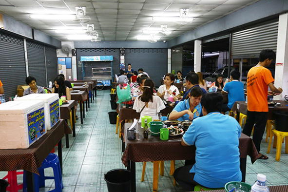
支店も本店同様、エビ入りとカニ入りのどちらかかのオップウンセンをチョイス。私はエビ入り蒸し春雨のクンオップウンセンをオーダーしました。
鍋の中には巨大なエビが3匹、ミドルサイズが1匹の計4匹が春雨の下に潜んでいて、まさにエビ祭り！ 鍋の底に沈殿した特製のダシをしっかりとかき混ぜ、春雨とエビにも絡ませます。
一口食べるとそれからはもうノンストップ！ 手が止まらなくなるから恐ろしい！
本店は屋台のためビールはありませんが、支店はビールが冷やされているのも嬉しい点。
駅から近く、さほど混雑していない。しかもビールまであって、本店と同じ味が楽しめる。名店が出店した2店舗目もおすすめです！
［SHOP DATA］
ソムサック プー オップ サーカー2
TEL：081-823-9706
OPEN：16:00-22:00（月曜日休み）
PRICE：クンオップウンセン290B
［行き方］
BTSクルントンブリ駅2番出口を降りて、そのまま直進。数十メートルほど左手に駐車場があり、その奥に立地しています
【サイアム駅-Siam-路線図】
［サイアム駅］サイアムスクエアのど真ん中で極上のカオマンガイを食す！

サイアムスクエアといえばタイ人の若者が集まるバンコクの最先端ファッションエリア。小洒落たカフェや飲食店、さらに『サイアムパラゴン』や『サイアムスクエアワン』といった巨大ショッピングモールが並ぶこの場所に、20年近く営業しているカオマンガイ屋があることは、あまり知られていないでしょう。
『カオマンガイゴーター』にはチュラロンコン大学の学生から中国人やマレーシア人、欧米系の観光客にまで知れ渡っているカオマンガイ屋なんです。
ぷりぷりの食感に富んだ鶏肉に絶妙な炊き加減のご飯。それに甘めのナムチム（タレ）を少々。う、う、旨い！
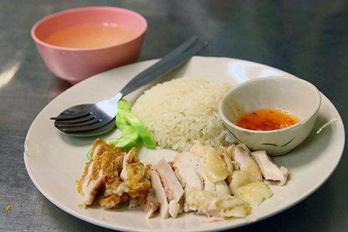
取材で訪れた日は女性店主のユーピンさんがお店を取り仕切っていました。
「うちはね創業して約20年。ねぇねぇ、カオマンガイだけじゃなく生春巻きやムーピン、クイッティアオも美味しいから食べていってよ！」
人懐っこい笑顔を見せてくれるユーピンさんにおすすめされた三品。甘めのタレがかかっている生春巻き、豚の串焼きのムーピン、レタスがトッピングされたあっさり風味のクイッティアオは、ユービンさんが推すだけある品々です。
どれも美味しく満足させていただきましたが、さすがに４品食べると超満腹！
［SHOP DATA］
カオマンガイゴーター
TEL：02-658-3880
OPEN：6:00-19:00（無休）
PRICE：カオマンガイ60B、クイッティアオ60B、生春巻き50B
［行き方］
BTSサイアム駅からSiam Square Soi3を南へ徒歩５分ほど。Soi Chulalongkorn 64を左折してすぐ
［サイアム駅］ひと口食べると笑みがこぼれる 絶品カオナーガイとクイッティアオ
古き良き食堂が姿を消しつつある若者たちのファッションエリア、サイアム地区。特にサイアムスクエア周辺には若年層向けの店や『サイアムスクエアワン』といった巨大モールが建ち、タイ飯食堂など絶滅したかのように映る街並みです。
そんなエリアにまだ細々と、いやいや盛大に営業している食堂が残っているんです。サイアムスクエアの西端に佇む『ROD DEE DET -SIAM SQUARE-』。飾ることなど一切ない食堂然としたお店で、繁忙時間になるとチュラロンコン大学の学生や周辺で働く人々でごった返し、「まだまだ若いもんには負けへんでー」といった気概すら感じます。
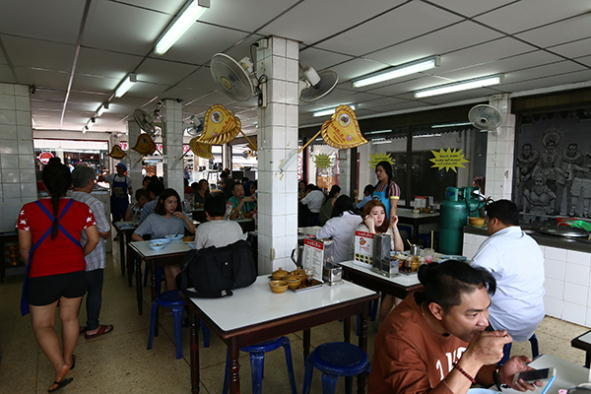
お店の主戦力メニューはクイッティアオとカオナーガイ。クイッティアオは2種類あり牛肉入りと、透明なスープのクイッティアオ・ナムサイです。二品ともいただきましたが、私の好みはクイッティアオ・ナムサイでした。クイッティアオには珍しくほくほくに煮込まれた大根が入っていて、その他にはルークチンもトッピングとして脇役を担っています。
私は注文した際、センレック（中麺）をお願いしたのですが、出てきたのは太麺のセンレック。てっきり店員の聞き間違いかと思ったら、どうやらセンレックはもともと置いていないそうです。センレックがないクイッティアオ屋は珍しい。
続いてはカオナーガイ。とろみが効いたスープがご飯の上にたっぷりとかけられ、その中にはじっくり煮込まれヤワヤワになった鶏肉が、我主役なりといった存在感を光らせています。中華料理が源流になっているのでしょうが、カオナーガイって辛くもなく、酸味もないし、まったくタイ料理っぽくない。それだけに、口に合う方も多いでしょう。
シチューのようなカオナーガイは、ご飯と一緒にペロリと完食！
［SHOP DATA］
ROD DEE DET -SIAM SQUARE-
TEL：092-654-4654,02-252-7524
OPEN：9:00-21:00
PRICE：クイッティアオ ヌア50B、クイッティアオ ナムサイ50B、カオナーガイ50B
［行き方］
BTSサイアム駅2番出口を降り、右手にラマ1世通りを見ながらサイアムスクエア・ソイ1まで行きます。ソイ１を左折、南下して突き当たりのスペース奥に立地しています
【サパンクワーイ駅-Saphan Khwai-路線図】
［サパンクワーイ駅］ほんの少しだけ移転した 創業40年を超えるカオマンガイの名店
バンコクにはガイドブックにも載るような有名カオマンガイ屋が幾つかありますが、ここで取り上げる『モンコンワッタナー』もその１つに数えられるお店です。創業40年以上、BTSサパンクワーイ駅最寄りから場所を変えずずっと営業してきましたが、移転したという一報が届いたのは2015年の秋でした。
どこへ行ってしまったのか...。という心配は杞憂だったようで、どうやら移転した場所は数十メートル先だったようです。
私が『モンコンワッタナー』を訪れたのは、前回取材した以来。およそ1年ぶりです。店の場所は『OFFICE MATE』を挟んで反対側に移りましたが、雰囲気は以前とほとんど変わらない。
1年ぶりにいただくカオマンガイも、前回の味と遜色なく、バンコクトップレベルであり、こちらも変わらない旨さです。
ところが１つだけ大きく変わったことがありました。いつも鶏肉をさばいていた店主の男性がおらず、若い男性が変わって厨房に立っていること。どうやら、ただ休んでいるわけではないようです...。
「彼は移転とともに引退して、私が『モンコンワッタナー』を引き継いだんです」
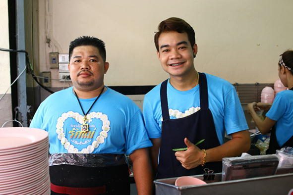
現店主オップさん（写真右）に聞くと、移転したのは2015年10月。前店主は移転のタイミングで身を引き、甥っ子のオップさんに任せ、お店にはほとんど顔を見せないと言います。
移転にかかった費用は、前店主がすべて出資。
名店の味は新しい世代へとバトンタッチされ、これからもずっと守り続けられるでしょう。
［SHOP DATA］
モンコンワッタナー
TEL：02-270-1107
OPEN：7:00-16:00（無休）
PRICE：カオマンガイ（並）40B、（大）50B
［行き方］
BTSサパーンクワイ駅2番出口から、『Paolo Memorial Hospital』の前を過ぎ、右手にある1本目の路地を入ります。『OFFICE MATE』があるので、左脇に入ったところです
［サパンクワーイ駅］超有名カオマンガイ店に負けない 豚足煮込みの魅力で惹き付ける！
BTSサパンクワーイ駅。界わいで有名なタイ飯屋といえばカオマンガイの『モンコンワッタナー』でしょう。2015年に近所へ移転してからも変わらぬ人気で、昼どきは並ぶほど混雑しています。
さて、このカオマンガイ屋の存在感に隠れてしまいがちなのが、豚足煮込み専門店の『ソムジャイカオカームー』です。ここを『モンコンワッタナー』と間違えて来店する人も多いらしく、入口に「カオマンガイ屋は向こう」と矢印とともに書かれた看板を掲げるほど。タイ語を読めない外国人なら、間違えてしまうのも無理はないでしょう。
創業してから13年。いつ来店しても店主が豚足をさばいている姿を見ることができます。さばいている時は厳しい顔つきなんですが、声を掛けると愛嬌のある微笑みでニッコリ。

メニューはカオカームーとカオムーデーン（チャーシューご飯）の2種類。カオムーデーンも旨いですが、私のおすすめはやはりカオカームー！ 煮込まれた豚足からあふれる優しさと滋味に癒されます。近隣に超有名店『モンコンワッタナー』が営業する不利がありながら、13年間で人気店に登り詰めたのは、丹精込めて作り上げたカオカームーがあってこそ！

［SHOP DATA］
ソムジャイ カオカームー
TEL：081-613-1591,081-804-1919
OPEN：8:00-16:00（第4木曜日と金曜日休み）
PRICE：カオカームー40B、カオムーデーン40B
［行き方］
BTSサパンクワーイ駅2番出口を降り、Paolo Memorial Hospitalを右手に見ながら北上。一つ目に見える路地を右折し100メートルほど進みます
【サパーンタクシン駅-Saphan-Taksin-路線図】
［サパーンタクシン駅］日本語の看板を掲げるフカヒレ屋台 絶品タイ中華と共に舌を唸らせる！
毎夜、「大中おいしいふかひれ」と日本語併記の看板を掲げた屋台。こういった日本語表記の店はしばしば間違ったヘンテコな日本語があり、微笑ましくなることもありますが、この屋台はオール平仮名ながらきちんとした日本語が使用されています。
「日本人が書いてくれたからね」
私がオーダーしたフカヒレスープを忙しそうに作りながら答えてくれる男性店主。創業60年という『タイトン フーチャラーム』のフカヒレスープは500バーツ、800バーツ、1000バーツ、1500バーツとフカヒレのサイズによってランク分けされています。
極限にまで熱せられた土鍋に投入されたフカヒレスープは、ガス火を離れテーブル上に鎮座しても元気に沸騰中！ 少々とろみの効いた熱々のスープは、まろやかでコクと深みがあり、額から流れる汗など気にさせない旨さです。500バーツなのでサイズは最小ですが、フカヒレもきちんと入っています。
隣の席に座っていたタイ人の3人組が、炒めた麺料理を食べている。気になり店主に聞くと「ヤキソバ」と日本語料理名が飛び出しました。
上海ヤキソバ風に仕上げられた「ヤキソバ」は、カニの身も入った豪華「ヤキソバ」！
ちなみに隣接する屋台で提供しているのは「ツバメの巣のスープ」です。
これも食べたかったけど、胃袋ギブアップ！
［SHOP DATA］
タイトン フーチャラーム
TEL：089-200-8261
OPEN：18:00-24:00（無休）
PRICE：フカヒレスープ500B、800B、1000B、1500B、上海風やきそば200B、

［行き方］
BTSサパーンタクシン駅３番出口を降りてジャルンクルン通りを北へ。ロビンソンデパートのすぐ脇を走る小道との角に立地しています
［サパーンタクシン駅］1909年に創業した超老舗店の 汁なしバミーで言葉を失う
私の知り合いにバミー麺（中華麺）が大好きな方がいて、バンコクのあらゆる店のバミーを食べ歩いています。その方をここで紹介する『Prachak Restaurant』へ案内し、汁なしバミーが旨いと伝え食してもらいました。
「これは旨い！ ここのバミーは最高ですね！」
バミー好きの彼が絶賛するほど、ここのバミーは本当に旨いんです。
BTSサパーンタクシン駅から3分ほど。『Prachak Restaurant』は、1909年に現店主の祖父がアヒル肉を売る食堂としてスタートしました。仕入れるアヒル肉にはこだわりを持ち、生後42日〜45日のオスだけに限定。メスの肉は上質ではないらしいのですが、安値で仕入れられるだけに他では使用している店舗もあると言います。
『Prachak Restaurant』の売りは、こだわりのアヒル肉を使ったバミー麺。ほどよい弾力に恵まれたアヒル肉、秘伝のタレ、それらを味方につけたバミー麺が美味くない筈がない！
バミーのトッピングはアヒル肉だけではなく、ギアオ（ワンタン）、ムーデーン（焼豚）、カニ身、揚げた豚肉などなど。これら具材の組み合わせにプラスして、スープ有りか無しを選びます。私の推しは先に触れたように汁なしバミー。
メニューはバミーのほか、タイ料理もある程度揃っています。日本語の媒体だけではなく諸国のガイドブックにも載っているようで、来店する客はタイ人、日本人、中国人、韓国人、白人など、人種のルツボと化していることも多々。開店してしばらくすると客であふれ、空席を待たなければならないことも少なくありません。
現店主の御年は取材時点で71歳！ 見るからに元気そうで、衰えを感じないのは摩訶不思議。
「うちのアヒル肉を食べていると長生きできるよ」
この店はちょくちょく通っていましたが、これからは来店回数をもっと増やそう！
［SHOP DATA］
Prachak Restaurant
TEL：02-234-3755,02-235-6324,083-910-1444
OPEN：8:00-20:30（ソンクラーン、ギンジェー期間中は休み）
PRICE：ローストダック100B、ワンタン＆ローストダック＆豚肉乗せバミー120B、エビワンタン50B
［行き方］
BTSサパーンタクシン駅3番出口を降りて、ジャルンクルン通りを渡ります。左折（北方面）して真っ直ぐ200メートルほど行った右手です
［サパーンタクシン駅］取材に来た人々が絶賛する 奇跡のラートナー！
「これまで、雑誌の取材などでたくさんの方が来てくれましたけど『ここのラートナーがバンコクでナンバーワンだ』と言ってくれる人が多いです」
そのように話してくれたのは、BTSサパーンタクシン駅から歩いて5分ほどの場所にある『Sanyod Restaurant』の店主。『Sanyod Restaurant』は1962年に創業し、この地で50年以上も営んできた老舗店です。外観や内装に古さを感じないのは、きっとリノベーションしたためでしょう。1階と2階に客席が設けられていますが、1階席はテーブルがたった2つしかない！ それでもスタッフ全員が手を休める暇もないほど忙しいのは、周辺の会社へ配達もしているためだそうです。
メニューにはタイ料理のほかタイ中華もあり、一番の推しはラートナー。私はこのラートナーともう一品、苦瓜のスープをオーダーしました。まず出てきたのは苦瓜のスープ。ゆっくりゆっくり食しているのは、苦瓜スープを味わっていることもありますが、お目当てのラートナーを待っているという理由が主。
5分もすれば出てくると思いきや、スープを食べ終わっても出てくることなく、その後15分ほどが経ちましたが現れません。ひょっとしたら、忙しさに追われスタッフが忘れているのか...。あと2、3分待って出てこないようならスタッフに言ってみよう。そう心に決めたところで主役ラートナーの登場です！
『Sanyod Restaurant』のラートナーは溶き卵がかけられている点が特徴。マッシュルームが多めにトッピングされたラートナーをひと口。
これは、旨い！
いままで食べてきたラートナーは何だったのか!!
無我夢中になって食べ進めると、15分以上待ったラートナーは2分ほどで完食してしまいました。
食後、店主に話を聞いたところ、冒頭で紹介した言葉が返ってきました。雑誌などの媒体はあらゆる店でいろんな料理を食べているでしょう。そんな方々が『バンコクでナンバーワンのラートナーだ』と言ったのも頷けます。
だって、ほんとに美味しいんですもの！
［SHOP DATA］
Sanyod Restaurant
TEL：02-236-3905,02-234-7968,02-630-920
OPEN：8:00-20:30
PRICE：溶き卵入りラートナー70B、苦瓜のスープ100B
［行き方］
もっとも近い出口はBTSサパーンタクシン駅3番出口。降りてすぐのジャルンクルン通りの信号を渡り、Sathon Nuea通り沿いを250メートルほど直進。Charat Wiang通りを左折し真っ直ぐです
［サパーンタクシン駅］2016年にオープンした こだわりのパッタイ専門店
BTSサパーンタクシン駅を降りて徒歩5分。ジャルンクルン通りを200メートルほど北上すると、東へ伸びるSi Wiang通りという小道に出合います。食堂や屋台などが軒を連ね、地元の人々が集まる通りですが、ここ数年になりカフェなどの新しい店が数軒オープン。古い町並みとうまく融合し、独特な雰囲気を創り出しています。
2016年、この通りに新しく出店したお店の１つが『369パッタイグンソッド』。タウンハウスを改築した小さな店舗は、店内のいたるところに店主のこだわりを散りばめた、パッタイ専門店です。
白を基調とした店内、装飾品には竹製のカゴやなど店主自身が選んだものをうまく配置し、品を感じる演出がほどこされています。
メニューに載っているのは、通常のパッタイと野菜パッタイ、店名にもなっているパッタイ グンソッド（エビ入りパッタイ）の三品だけ。これだけパッタイだけに絞った店は、意外ながら少ない。
私が選んだのは、お店一推しのパッタイ グンソッドです。一口食べて感じたのは炒め加減の素晴らしさ。パッタイにありがちなべちゃっとした仕上がり感はまったくなく、麺のもちもち感はしっかりあり、エビの食感がきちんといかされている。皿から立ち昇る薫りだけでも、シェフの腕前がよく表れたパッタイです。
場所柄、外国人旅行者もときどき見えるようで、店主の男性は英語がかなり話せるためタイ語が話せなくともオーダー可能。
Si Wiang通りには古くて旨い店もあり、『369パッタイグンソッド』のようにセンスあるタイ人が出した新店もある。数百メートルの短い通りですが、パッタイをはじめいろんなタイ料理の食べ歩きが楽しめる通りです。
［SHOP DATA］
369パッタイグンソッド
TEL：089-889-9148
OPEN：11:00-20:00（日曜日休み）
※土曜日は15:00閉店
PRICE：パッタイグンソッド70B、パッタイ50B、野菜パッタイ60B
［行き方］
BTSサパーンタクシン駅3番出口からジャルンクルン通りへ出て左折。真っ直ぐ行くと右側にSi Wiang通りがあり、この通りを入って100メートルほどの場所です
【サラデーン駅-Sala Daeng-路線図】
［サラデーン駅］タニヤ通りで20年以上営むクイッティアオ屋台はいつも満席
通りの中央付近で営む『クイッティアオ ガイ タニヤ』。看板が出ていないので、私はずっとここには店名が無いものだと思っていたんですが、取材時に聞いて初めて知りました。営業時間は14時30分からと変則的。ランチタイムを外しているものの、それでも開店するや客が殺到する超人気店です。
鶏肉のクイッティアオ（クイッティアオ・ガイ）専門店で、トッピングには味の染みた鶏胸肉や鶏足（もみじ）、ささみ、大きな苦瓜と、ボリュームのあるクイッティアオです。

味わい深いスープとこのボリュームで40バーツ。コスパの高さは、そのまま客数に繋がっているようで、いつ来店しても賑わっています。
「鶏肉は一日に50〜80キロは出るよ」
教えてくれたのは、いつも笑顔を見せている店主です。
タニヤ通りで出店し23年。定休日はなし。この通りへ来ることがあれば、一度ご賞味あれ！
［SHOP DATA］
クイッティアオ ガイ タニヤ
TEL：なし
OPEN：14:30-20:00（無休）
PRICE：クイッティアオ・ガイ40B
［行き方］
BTSサラデーン駅からタニヤプラザビルに直結している出口から降りてタニヤ通りへと出ます。150メートルほど進み、右に曲がったところです
［サラデーン駅］パッポン2通りの入口で30年 驚きの超やわらかガイヤーン
シーロム通りからパッポン2通りへと入る、ちょうど角。午後2時から営業が始まる屋台があります。
女性が１人で黙々とガイヤーンを焼いている、気に留めなければ見過ごしてしまうような規模の屋台。創業して30年というこの屋台をおすすめしてくれたのは、タイでライターとして活躍されている髙田胤臣さんでした。
炭火を使いじっくり焼き上げられたガイヤーンが柔らかいのなんの！
塩と胡椒だけを使ったいたってシンプルな味付けですが、それだけに鶏肉のジューシーな肉汁がそのまんま味わえるんです。
屋台では、手羽先、脚の肉、胸肉、ささみなど鶏肉の各部位のほか、揚げた豚肉、レバー、ソーセージなども並んでいます。
タイ東北部、サイヤプーン出身というパーボーさん。
年齢は伺えませんでしたが、50歳前後ではないでしょうか。
屋台とはいえたった１人で営み、さらに屋台を毎日ここまで持って来なければなりません。パーボーさんの家はここから数キロはあるクロントゥーイ。そんな場所から彼女が、どうやってこの屋台をシーロム通りまで引っ張ってくるのか...。
「パッポン２通りを入ったすぐそこに置かせてもらってるのよ」
なるほど、そういうことでしたか！
［SHOP DATA］
パーボー
TEL：089-752-9917
OPEN：14:00-19:00（日曜日休み）
PRICE：手羽先30B、脚の肉30B、胸肉60B
［行き方］
BTSサラデーン駅の1番出口から、シーロム通り方面の階段を降ります。そのまままっすぐ100メートルほど。歩道上で営業しています
［サラデーン駅］甘く煮た豚が彩るバミーと 山積みの骨付リブ肉をどうぞ
2016年3月3日付け「激旨！タイ食堂」の記事で、バミーが美味しい『Moo Moo Noodle』というお店を紹介しました。本書でもこのお店を取り上げたかったのですが、最寄りのBTSサラデーン駅から歩くと10分以上かかってしまい、駅近としては紹介できません。
ところが！ 『Moo Moo Noodle』には姉妹店があり、そちらはサラデーン駅から歩いて10分圏内に立地しているんです。姉妹店の『Moo Moo Noodle』が営業しているのはシーロムのソイ3。本店のようにガパオライスなどのメニューはなく、閉店時間は本店より早いですが、主力メニューであるバミー（中華麺）とDino Volcanoはちゃんと揃えられています。

バミーはスープの有無が選べ、甘く煮た豚肉がトッピング。ちなみに店名の『Moo』は豚を意味するタイ語なんです。甘く煮た豚肉を乗せたバミーは珍しい。丼の中を攪拌するとタレがいい具合に麺と絡むので、しっかり混ぜるのが重要。
そしてもう一品のDino Volcano。不穏なネーミングが付けられているのは、その姿にあります。スープが入った丼に、豚の骨付リブ肉を限界まで積み上げた、畏敬の念すら抱かせる一品！ 下手に箸を突っ込むと、骨付リブ肉がごろりと転がりテーブル上へ落下するのは避けられない。そっと、優しくリブ肉お掴み、おもむろに頬張ります。
ボルケーノ！
［SHOP DATA］
Moo Moo Noodle
TEL：02-636-6626
OPEN：9:00-18:00（日曜日休み）
PRICE：バミー ムー ワーン50B、Dino Valcano 60B、ジュース15B
［行き方］
BTSサラデーン駅2番出口の階段を降りたらUターン。そのままシーロム通り沿いを真っ直ぐ行き、シーロム・ソイ3を左折して数十メートルです
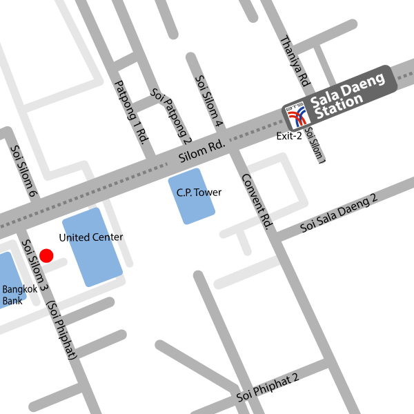
［サラデーン駅］ランチタイムは座れない!? 本格カオソーイの専門店
「お店を始めてから12年ほどが経ちました」
シーロム・ソイ3でカオソーイ専門店『シップソーン パンナー』を営む女性店主は、ランチタイムの忙しさが一息ついたころ、そう話してくれました。この通りには屋台飯やカフェなど飲食店が集まることから、昼食の時間になるとランチを求めタイ人が殺到。『シップソーン パンナー』にもたくさんの人が詰めかけ、13時を過ぎても客足は引かず、私が彼女と話すことができたのは時計の針が14時を指そうというころでした。
タイ北部のチェンライ県出身である彼女。『シップソーン パンナー』は北タイの麺料理を揃え、メニューにある六品は鶏肉、牛肉、豚肉のカオソーイ、カノムジーン、ナムニャオ、クイッティアオです。
カオソーイは通常サイズだと小さめですので、女性でも1杯では足らないと思います。だからこそこの店では、二品以上をオーダーしそれぞれの味を楽しむことができるんです！ 私は鶏肉のカオソーイと、ナムニャオ（豚肉やトマトを煮込んだスープのカノムジーン）をいただきました。カオソーイはココナッツミルク多めながら、薫り高いスープ。太麺を使っているのは私好みです。ナムニャオは辛さが抑えられあっさり仕立て。もう1杯いけそうでしたが、肥満注意報発令！
バンコクはどんなジャンルの料理でも揃っていますが、カオソーイ専門店は意外と少ない。だからこそ、駅から徒歩10分以内に『シップソーン パンナー』があるのはうれしい限りです。
［SHOP DATA］
シップソーン パンナー
TEL：086-334-1489
OPEN：7:00-14:30（日曜日休み）
PRICE：カオソーイ35B、カノムジーン35B、ナムニャオ35B
［行き方］
BTSサラデーン駅2番出口の階段を降りてUターン。シーロム通りを右手に見ながら直進し、左に伸びるシーロム・ソイ3に入ります。250メートルほど入った右側に立地
【タラートプルー駅-Talat phlu-路線図】

［タラートプルー駅］ピンクのネオンが灯る下で食す 土鍋に入った熱々のクイッティアオ
知る人ぞ知る『トンブリープラザ』なる複合コンプレックス。
BTSタラートプルー駅から徒歩５分ほどにあり、施設内にはコヨーテクラブ、カラオケクラブなど、各種エンターテイメントが一つのビルに入った男の楽園です。
この目の前に店がオープンしたと言います。土鍋でクイッティアオを提供する『ジョークプー モー タラートプルー』。
店名に冠せられているようにご飯をスープで炊いたジョークや、平麺を巻いたマカロニのような麺のクイジャップもあるようです。私はママー麺（インスタント麺）のトムヤムスープ、シーフードセットをチョイス。
ほどよく酸味が効いたトムヤムスープは、熱せられた土鍋で熱々！ イカやエビなどがトッピングされて89バーツならお安い。

「オープンしたのは2016年。開業したばかりなんです」
若いご夫婦が営むこちら。聞くとオーナーは『トンブリープラザ』を運営する方と同じだそうです。
同店での注文方法は、まずセット内容を選びます。シーフードセット、川エビセット、サーモンセットなどなど。次に麺やスープを選び、手渡される紙に記載すれば完了。メニューには英語が併記されているのでご心配なく。
クイッティアオだけじゃなく、チムチュムもあり、それに合わせビールもあるのも嬉しい限り！
［SHOP DATA］
ジョークプー モー タラートプルー
TEL：02-472-1969
OPEN：16:00-24:00（無休）
PRICE：シーフードセット89B
［行き方］
BTSタラートプルー駅を降り、南北に走るラチャダーピセーク通りを北へ上がります。5分ほどの場所に左手にコヨーテクラブがありそこの駐車場内です
【チットロム駅-Chit Lom-路線図】
［チットロム駅］MSGを使わないイサーン料理 健康志向だけでなく料理も秀逸！
セントラルワールドの7階。飲食店が並ぶこのフロアーにある『Kum Poon』は、オープンして9年のイサーン料理店です。
バンコク都内のセントラルのほとんどに店舗を構え、総店舗数は7店舗を数えます。
同店ではイサーン料理を扱い、それらすべてNO MSGを謳っています。MSGとは旨味調味料の主成分。タイ人は旨味調味料が大好きなのに、NO MSGのタイ料理店にこれほど客が入っているのは、料理を食べれば分かるでしょう。『Kum Poon』が提供する料理はどれもレベルが高い！
私がいただいたのはお店が推す三品。イサーン料理の定番トムセープとガイヤーンの二品、耳にしたことがないタムルアン パバーという料理です。
トムセープは酸味、辛みともほどよく、旨味調味料を使わずに深みを出している。
ガイヤーンは『カオ・スワン・グワン』という地鶏（ガイバーン）を使うこだわり。肉の弾力が素晴らしい！
そして三品目のタムルアン パバー。太麺に見えるのは、青パパイヤのスライスで、ソムタムに近い味わいのイサーン料理です。
添えられているケープムー（揚げた豚皮）と良く合い、旨味調味料を使わずともこれだけのイサーン料理が出せることに驚きました。
【SHOP DATA】
Kum Poon（ガンポーン）
TEL：02-646-1044
OPEN：10:30-22:00（LO:21:15）
PRICE：トムセープ180B、ガイヤーン220B、タムルアン パバー120B
［行き方］
BTSチットロム駅からセントラルワールドへはスカイウォークが直結しています。1番出口が最寄りです
［チットロム駅］1日に100kgもの鶏肉を揚げる ガイトート（鳥から揚げ）屋台
お２人でガイトート（鳥から揚げ）を売る屋台には、ひっきりなしに客が訪れ、手を休める暇がないほど。
「ここで13年間、屋台をやっています」
サクサクと小気味のいい音を立てながらガイトートを切る女性店主は、笑顔でそう話してくれました。
『ガイトート ランナー』は洒落たレストランやホテルが並ぶランスワン通りで営業。2つのフライヤーで揚げられたガイトートは油っこくなく、サクッとした衣に包まれ食べやすく、柔らかい！ カオニャオ（もち米）は白米の他にカオダムという赤飯のもち米もあり。付けダレのナムチムは2種類から選べます。
「日本人の方にもたくさん来ていただいてますよ」
BTSチットロム駅から近く、土地勘がない旅行者やバンコクに住み始めたばかりの方でも迷わず行くことができるアクセス。
外国人観光者から地元タイ人にまで好まれるガイトートは、1日にいったいどれほどの鶏肉が出るのか聞いてみました。
「1日に100kgは揚げてるんじゃないかしら」
ヒャッキロ！
1日の営業時間が7時間だから、1時間あたり約15kg平均のガイトートが売れているという計算です。
落ち着いた雰囲気のランスワン通り。ショッピングやお散歩のお供に、メディアにも取り上げられたガイトートをぜひ！
［SHOP DATA］
ガイトート ランナー
TEL：086-767-8178
OPEN：6:00-13:00（日曜日休み）
PRICE：ガイトート25B、カオニャオ5B
［行き方］
BTSチットロム駅4番出口を降りランスワン通りを南下。徒歩5分ほどです。セブンイレブンの真ん前で営業しているので、それを目印に
【チョンノンシー駅-Chong Nonsi-路線図】
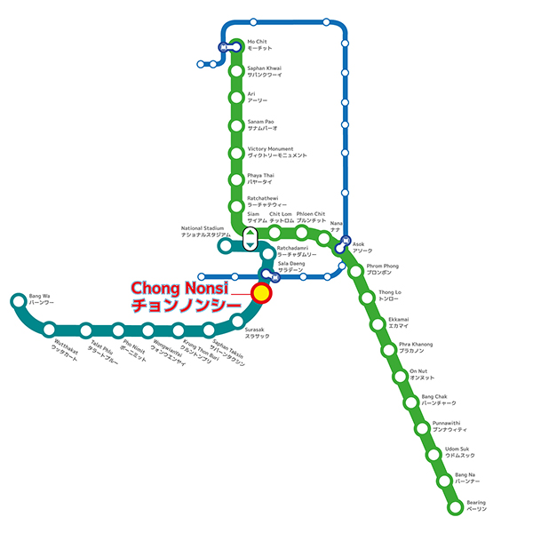
［チョンノンシー駅］早めに来店しなければ満席必至！駅近の超人気タイシーフード店
BTSチョンノンシ―駅から徒歩2〜3分。
『Lek Seafood』は至便な立地だけではなく、タイシーフード料理の数々が評判となり、連日満席となる超人気店です。18時を過ぎると来客が止まらず、19時には空席がなくなり、表で待つ人々も出てくるほど。
何度か来店したことがありましたが、いつも一席か二席ほどしか空いていないことが多いため、取材で来店したのはオープン直後の17時過ぎでした。
写真は19時ごろに撮影したもの。
空席を待っている方は、待ちながらメニューを見て料理を選んでいます。
19時を過ぎると2階席も満席でした。
「お店を始めたのは20年以上前。契約の関係で敷地面積が小さくなってしまったのでリニューアルしたのが2年前です」
母親の代に創業し、現在は娘さんが店主となり切り盛りしています。まずは巨大な生牡蠣にライムを絞り一口。潮の薫りが口一杯に広がるこの感じ！ さらに牡蠣を使った料理オースワン（牡蠣の卵とじ炒め）、プラーガポン マナオ（スズキのライム蒸し）と、シーフードのオンパレード。どれを食べてもハズレはなく、連夜満席が続くのはこの安定感があってこそです。
『Lek Seafood』はシーフード料理だけではなくイサーン料理も揃えるなどメニューのバリエーションは多彩。食べ終わったあと、店主の女性がとある一品をおすすめしてくれました。
「カオニャオ・マムアンも美味しいわよ」
［SHOP DATA］
Lek Seafood
TEL：02-636-6460
OPEN：17:00-24:00（日曜日休み）
PRICE：生牡蠣（1個）65B、オースワン250B、プラーガポン マナオ380B
［行き方］
BTSチョンノンシ―駅5番出口の階段を降りUターン。十数メートル先のセブンイレブンを右折して左手
【トンロー駅-Thong Lo-路線図】
［トンロー駅］知らなければ通り過ぎてしまう 超駅近のカフェ風タイレストラン
トンロー駅から歩いて２分程度。カフェと見紛い、通り過ぎてしまっている人も多いと思います。
奥まった入口、色使いはほとんどなく木目をそのままいかした外観。店内も落ち着いた色合いで統一され、トンロー通りとスクンビット通りの交差点近くに立地しているため交通量が多い場所ですが、それをまったく感じさせない雰囲気です。
こちらは2階席です。
南タイ料理を主に、イサーン料理も加え、約40種のメニューを揃える『Sit and Wonder』。抜群の立地場所ながら価格は決して高くなく、100バーツ代のメニューが多くを占めています。
お店のおすすめとして出していただいたのは三品。カシューナッツと鶏肉炒め、パイナップルの器でいただくガイパットメッドマムアン。
トゥアプーと言う四角豆とエビを、ココナッツミルクとスパイシーな調味料で和えたヤムトゥアプー・グンソッ。
8種類の野菜を、魚を発酵させたディップで楽しむナムプリック・プラトゥーポンです。
特に一推しなのはヤムトゥアプー・グンソッ。四角豆の風味とエビのぷりぷり感に、適度な辛さとココナッツミルクとのドレッシングが絡み合い旨い！
ランチタイムは59バーツからのメニューを揃え、2016年6月から朝食メニューも始めるなど、朝から夜までいろんな表情を見せてくれます！
［SHOP DATA］
Sit and Wonder
TEL：02-714-1158
OPEN：7:00-23:00（無休、11時までは朝食メニューのみ）
PRICE：ガイパットメッドマムアン150B、ヤムトゥアプー・グンソッ120B、ナムプリック・プラトゥーポン120B
［行き方］
BTSトンロー駅３番出口が最寄り。トンロー通りへ出て信号を渡り、そのままトンロー通りを北上。100メートルほどの右手です
［トンロー駅］他で見たことが無いメニュー多数 創業30年以上のタイ中華レストラン
扉を開けて入ると壁一面に張られた無数の写真！
トンロー駅から徒歩５分ほど、しかも駅を降りて直線で行けるタイ中華レストラン『センチャイ ポーチャナー』の店内は、お客さんの写真で隙間なく壁が埋められています。
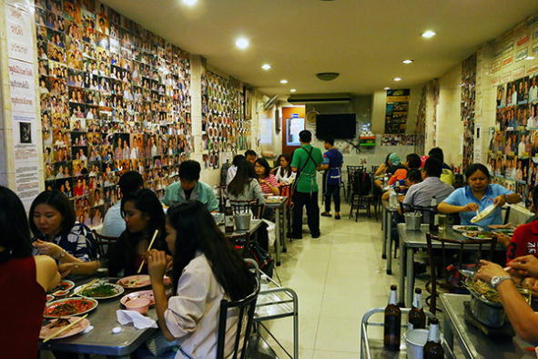
日本語の媒体でも取り上げられたことがあるだけに、メニューには日本語も併記。
創業30年以上、中国人である父親から受け継いだ味はタイ人だけではなく日本人の舌をも満足されてくれます。
現オーナーに写真撮影をお願いすると可愛い笑顔！
『センチャイ ポーチャナー』には一般的なタイ中華メニューだけではなく、他で見たことが無いメニューも揃っています。たとえば"しらすのハーブ和え"。揚げたしらすをピーナッツやハーブで和えた一皿です。
他に"揚げホルモンの煮込み"といった料理もアリ。煮込みとありますが、味が濃いわけではなく、揚げホルモンといったほうがいいかも。
私が好きなピータンのガパオ炒めもありました。揚げたピータンとバジルの相性がよく、バジルのさっくり感、ピータンのぷりんとした食感が抜群。
メニューにはまだまだたくさんの未知なる料理が掲載されていたので、1度だけの来店だとまったく物足りない！
［SHOP DATA］
センチャイポーチャナー
TEL：081-376-0150
OPEN：18:00-4:00（不定休）
PRICE：揚げホルモンの煮込み100B、ピータンとバジルの揚げ物80B、しらすのハーブ和え100B
［行き方］
BTSトンロー駅2番出口方面へ向かい、突き当たり左の階段を降ります。そのまま真っすぐ300メートルほど進み、ソイ32を過ぎた辺りの左手です
［トンロー駅］駅から徒歩0分 創業30年 格安フカヒレと至極のタイ中華
『頂上魚翅』はトンロー駅から徒歩0分という超好立地にありながら、格安でフカヒレを提供している小さな食堂。駅近ですけど店前を通る人が少ないためか、日本人には案外知られていない隠れた名店なんです。
「創業したのは私の父で30年ほど前です。私が18歳のときでした」
現オーナーはフイさん。店頭で調理している彼は私が入店するときから笑顔を見せてくれ、対応しているときもずっと微笑みを絶やさず、お話ししてくださいました。
『頂上魚翅』ではサイズによってフカヒレスープの値段が異なり、もっとも安価なのはなんと300バーツ！
一等地のトンローですよ！
安くともそれなりのサイズのフカヒレが入っていて、食べ応えは十分。駅近で気軽にフカヒレが食べられるなら、ヤワラーに行く必要ないなぁ...。
他にタイ中華メニューが揃い、私がもう一品頂いたのはエビ入りの空芯菜炒めです。これも旨い！
フイさんがおすすめするのはアワビ入りあんかけご飯（200B）、フカヒレ炒め（300B）、クンオップウンセン（300B）など。
二階席は団体用の要予約席で、喫煙も可能だそうです。落ち着いた店内なので１人でも来店しやすく、団体にも対応している。
そして高いコスパと愛想の良い店主。非の打ち所がありません！
［SHOP DATA］
頂上魚翅（SHARK FINS SUKHUMVIT RESTAURANT）
TEL：02-391-3170,081-300-9293
OPEN：11:00-22:00（月曜日休み）
PRICE：フカヒレスープ（小）300バーツ、空芯菜とエビの炒め物
［行き方］
BTSトンロー駅4番出口を降りて真っすぐ。50メートルほど歩いた右手にあります
［トンロー駅］絶品オースワンを求めて オープンと同時にほぼ満席！
オースワンとは、牡蠣やもやしなどを、卵や水で溶いた小麦粉などと一緒に炒めた料理です。ぷりぷりとした牡蠣の持ち味、ふわりと炒めたられた卵とのマッチングが絶妙で、日本人でもオースワンを好む方は少なくありません。
もともと華僑の人たちが広めた料理のようで、中華系タイ料理店にオースワンが多いのは、そういった理由が隠されています。ここで紹介する『55 Pochana』も中華系タイ料理店です。
いろんなガイドブックなどで取り上げられたことをきっかけに、超人気店となった『55 Pochana』。人気となった火付け役は、先に触れたオースワンでした。オースワンといえば『55 Pochana』、『55 Pochaa』といえばオースワン、と言い切ってしまっても過言ではないでしょう。ここで初めてオースワンを食べたという人は多く、かくいう私も『55 Pochana』が初オースワンでした。

オースワンをオーダーするのは必須。200バーツと他店より少々お高めなのは、駅近であることを鑑みれば悪いコスパではありません。
他にオーダーしたのは、ジャーン ローン タレーというシーフードの鉄板焼き。熱々の鉄板の上でジューっという音とともに油が爆ぜ、薫りが一帯に広がり、周辺のお客さんまで魅了してしまう一皿です。
メニューの品数が多く、オースワン以外の料理も楽しる超人気店は、深夜まで開いているので夜食にもどうぞ!!
［SHOP DATA］
55 Pochana
TEL：02-391-2021
OPEN：18:30-03:30（無休）
PRICE：オースワン 200B、ジャーンローンタレー（海鮮鉄板焼き）250B
［行き方］
BTSトンロー駅3番出口からトンロー通り方面へ。信号を越えて数十メートルのところです
【ナナ駅-Nana-路線図】
［ナナ駅］イサーン料理などを揃える 落ち着いた木造建築の店舗
スクンビット・ソイ11といえば、各国料理が揃う国際色豊かな通りとして知られています。外国人観光客も多いソイ11で、タイ料理店といえばここを取り上げないわけにはいかないでしょう。
『Suk 11』は賑わう通り沿いにありますが、築数十年経っている木造建築で、落ち着きのある雰囲気のタイ料理店。
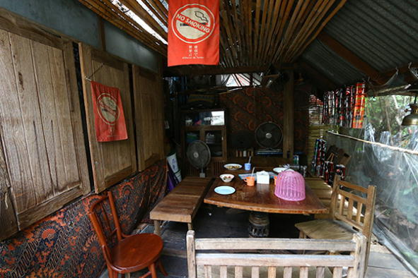
メニューに並ぶのはガイヤーンといったのイサーン料理を始め、パッタイなどの麺料理まで揃っています。観光客が多いエリアに立地していますが、価格は抑えられていて100バーツ以下のメニューが多数。
私がおすすめするのはお座敷タイプのテーブル席。木床に腰を下ろし、木の温もりを感じながらタイ料理を楽しめる店は、数少ない。
スタッフの方から教えてもらったのは、隣接する宿泊施設『Suk 11 Hostel』。こちらも築数十年経っているであろう木造建築で、敷地内が渋い！ 雑然とした中にもオーナーの嗜好が表現された個性あふれた雰囲気です。
一泊1000バーツ以下という値段設定だけに、外国人バックパッカーが集い、情報交換の場としても利用されているようです。
タイ料理店の値段設定も、ここで宿泊するバックパッカーたちに合わせ、抑えられているのでしょう。
［SHOP DATA］
Suk 11
TEL：02-253-5927
OPEN：8:00-14:00,16:00-23:00（無休）
PRICE：ガイヤーン45B、ヤムヘッド45B
［行き方］
BTSナナ駅3番出口を出て数メートル先にあるスクンビット・ソイ11を目指します。ソイ11を2〜300メートルほど進んだ左手にあります
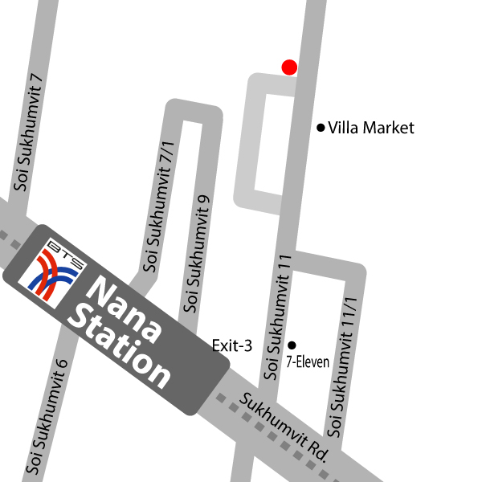
【ナナ駅】賑やかなスクンビット通りに タイ中華食堂がひっそりと佇む
BTSナナ駅からアソーク駅まで続く、スクンビット通りのソイ奇数側。以前は夜になると露店がひしめきあっていましたが、2016年、一帯の露店すべてに撤去命令が下り、下着やバッタ物を売っていた路上の風物詩は過去のものとなってしまいました。徐々に変貌しつつある一帯で、昔から変わらない姿で営業している食堂を紹介しましょう。
スクンビット・ソイ15の入口の角地。この場所で約80年におよぶ歴史を刻んできた『Yong Lee』です。店頭にアヒル肉を吊るし、外観は昔の食堂そのまんま。店内には額におさめられた紹介記事の数々が掲げられ、『Yong Lee』がメディアからも一目置かれている存在であることが分かります。一歩表へ出ると旅行者が往来し喧騒に満ちていますが、店の中はそれらを遮断してしまっているかのような静謐な時間が流れています。
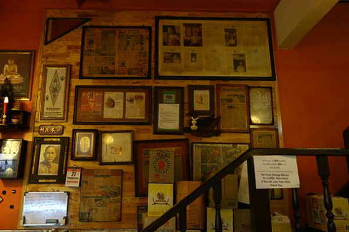
来店したのは二度目の営業開始時間である17時。この時間ならば忙しくないだろうと来店したら思惑通り、先客は一組。ローストダックとタンシチューを店員に告げると、スタッフはローストダックに使うタレを鍋に入れ炙り始めました。しばらくすると、鍋から炎が上がりファイヤー！ これがタレの決め手になっているようで、皿に盛られたローストダックからは香ばしい薫りが立ち昇り、いやというほど食欲をそそってくれます。ほどよい弾力のアヒル肉、その旨味を引き立て、さらに薫りを与える香ばしいタレ。これは他では食べられないローストダックでしょう！ タンシチューも『Yong Lee』ならではの一皿。
露店がほぼ全滅したスクンビット通り。創業80年以上を誇る『Yong Lee』には、これからも通りの名店としていつまでもこの味を守り続けてもらいたいなぁ。
［SHOP DATA］
Yong Lee（栄利）
TEL：02-251-5262
OPEN：11:30-15:30,17:00-20:30（隔週日曜日休み）
PRICE：ローストダック180B、タンシチュー180B

［行き方］
BTSナナ駅3番出口を降りて真っ直ぐ。スクンビット通り沿いをアソーク方面に300メートルほど進んだソイ15との角地です
【パヤータイ駅-Phaya Thai-路線図】
［パヤータイ駅］店内に無駄な装飾など一切なし！ 食堂に見えない創業60年の食堂
店前を通ってちらりと見ただけで、ここが食堂だと分かる人は少ないはず。
看板もない、店内にメニューや写真なども一切なし。
ただ緑が配色されただけの内装で、テーブルも緑という奇妙なカラーリングでありながら、創業して60年以上が経つという歴史ある食堂です。
そのような食堂なのでメニューもタイ語のみ。しかも食材しか書いておらず、上級者向けの食堂といっていいでしょう。
『チャイロート』には定番メニューもあり、それらは料理名を言えばちゃんと出てきます。
ここでまずオーダーしてもらいたいのはタンシチュー（シチュー・リン・ヌア）。
とろとろに煮込まれたタンの魅力は、食べている者を無言にさせるパワーです。
もう一品の定番メニューは、揚げ豆腐に炒めたミンチ肉をたっぷり乗せた一皿。 豚ミンチはニンニクや唐辛子などと炒められ、立ちのぼる薫りが食欲を覚醒させてくれます！
それにしても気になるのは店内の壁。通常の食堂ならメニューぐらい貼ると思うんですが...。
「いろいろと貼ると汚らしく見えるでしょ？ だから貼らないの」
お店のポリシーを教えてくれたのは店主の女性。
メニューは食材しか書いていないし、こだわり感が半端ない！
［SHOP DATA］
チャイロート
TEL：02-354-4090
OPEN：11:00-20:00（日曜日休み）
PRICE：タンシチュー180B、トウフー・トゥラー・プリック90B

［行き方］
BTSパヤータイ駅３番出口が最寄り。東西を走るシーアユタヤ通りを渡って左折。100メートルほどの場所です
［パヤータイ駅］70年以上もの時を刻み続ける 味わい深いラートナー
店の前には交通量の多いパヤータイ通りが走り、車やバスの排気音が轟く中、店内は不思議なほど落ち着きに満ちています。
BTSパヤータイ駅から徒歩でおよそ5分。創業して70年以上という食堂『プラプラチャイ ヨッド パック』。来客人たちは静かにご飯を食べ、店員の女性たちはのんびりと仕込みをしながら店を見ています。
「私のお婆ちゃんやお爺ちゃんの代から営業してるわよ」
現店主の女性はそう話してくれました。
同店のウリは、ほんのりと甘めのあんかけに、豚肉などをトッピングしたラートナー。麺はセンミー（細麺）、センヤイ（太麺）、バミー（中華麺）の3種。店頭に揚げたバミー麺が山積みになっているのは、きっと注文数が多いからに違いない。私が選んだのはこのバミー麺でした。
さくさくとした食感と、とろりとしたあんかけスープ。甘めのあんかけに少量の酢を垂らし、味を引き締めます。
同店のメニューには、ラートナー以外にぶっかけ飯やパットシーユーもあります。
パットシーユーとは太麺（センヤイ）をシーユーという醤油で炒めた料理。ラートナーを置く店ではよく見られる麺料理です。
これも食べたく店主の女性にオーダーしたところ......。
「パットシーユーはまだ仕込みが終わってないのよ〜」
このゆる〜い感じも、食堂ならではの味わいだなぁ。
［SHOP DATA］
プラプラチャイ ヨッド パック
TEL：02-215-6051OPEN：8:00-19:00（土日休み）
PRICE：ラートナー45B
［行き方］
BTSパヤータイ駅1番の階段を降りてUターンし数百メートル南。隣りにセブンイレブンがあり歩道橋の近くに立地しています
【バーンチャーク駅-Bang Chak-路線図】
［バーンチャーク駅］若いご夫婦が立ち上げた 駅近に佇む小洒落たカオソーイ店
2016年2月、BTSバーンチャーク駅の最寄りに一軒の小さなタイ料理店がオープンしました。スクンビット・ソイ60/1を入って数十メートルほどにある『Noomsensingha』です。メニューはカオソーイやナムニャオといった北タイ料理を代表する麺料理を主にクイッティアオなど。規模は小さいながら白を基調とした店内は細部までこだわった内装で、お座敷のような客席を設けるなど、若いご夫婦の感性が表れています。
私が外国人と分かるや、英語で対応してくれたご主人。鶏肉のカオソーイと、ナムニャオをいただきます。ナムニャオとは豚肉やトマトを煮込んだスパイシーなスープの麺料理。カオソーイのスープはココナッツミルクをやや多めに使っているのか少々甘め。スパイシーさが抑えられたスープと、ほろりとした鶏肉、麺は平麺が使われています。
私個人的な嗜好で言えば、カオソーイよりもパンチがあるナムニャオのほうが好きなんです。こちらのナムニャオは、カオソーイとは違いきっちりスパイシーを効かせていて、食べ進めると額から汗が流れる、ほどよい辛さに仕上げられています。ナムニャオ、ほんと好きだ！
「2016年の2月に2人でこのお店を始めたんです」
カオソーイなどを扱っているだけに、奥さんはタイの北部チェンライご出身だそうです。では旦那さんは？
「私はシンガポールから来たんです」
道理でずっと英語だったわけだ！ とはいえタイ語をまったく話せないわけではなく、奥さんとの会話はタイ語と英語のミックスだそうです。
最後にお2人の写真を撮らせていただきたいとお願いすると、小さなお子様も一緒に！
『Noomsensingha』では、美味しいカオソーイやナムニャオとともに、お2人の幸せそうな姿で癒されました。
［SHOP DATA］
Noomsensingha
TEL：093-027-2720
OPEN：10:00-17:00（土日休み）
PRICE：カオソーイ ガイ60B、ナムニャオ50B
［行き方］
BTSバーンチャーク駅2番出口が最寄り。スクンビット通り沿いをソイ60/1へと進み、ソイを入って数十メートルほど
［バーンチャーク駅］麺類から子豚の丸焼きまで揃う創業1969年のタイ中華食堂
外観に派手さはなく、一見すると地味な食堂ですが、『ROSDEE RESTAURANT』は創業1969年という老舗店。
アヒル肉が店頭に吊られているものの、アヒル専門店というわけではなく、タイ中華全般を扱っています。
バミー麺からラートナー、カオパット、カオナーペットのような麺類やご飯もの、炒め物や揚げ物、さらには子豚の丸焼きまで揃える充実ぶり。しかも全メニュー写真付きかつ日本語が併記されているは日本人にとってはありがたい。
オーダーしたのは、店のウリでもあるアヒル肉を使ったカオナーペット（アヒル肉乗せご飯）。ぷりぷりとした食感としっかりとした肉の弾力が楽しめ、ツユが染み込みこんだご飯は、じわじわっと笑顔にさせる旨さです。
海鮮ラートナーに使われているバミー麺は、さっと炒められていて、ほんのり香ばしい。スープのとろみは薄め。薄めの味付けながら海鮮の薫りが立ち、私好みのラートナーです！
「朝8時から営業しているけど、8時から9時まではアヒル肉料理だけ。全メニューを提供できるのは9時以降です」
店を取り仕切っていた男性スタッフです。彼はきびきびと注文を取りつつも、きめ細やかな気配りで対応。常連客と気さくに話す姿から、地のタイ人から愛されている店であることが伺えました。
［SHOP DATA］
ROSDEE RESTAURAN
TEL：02-331-1375,02-331-1377
OPEN：8:00-21:00（無休）
PRICE：カオナーペット65B、ラートナータレー85B／170B／260B
［行き方］
BTSバーンチャーク駅1番出口の階段を降りてUターン。直進すること３分ほどで店頭にアヒルを吊っているお店が右手に見えてきます
【プラカノン駅-Phra khanong-路線図】
［プラカノン駅］煮込んだ鶏肉、味が染みた苦瓜と 味わい深いスープとの絶妙コンボ
屋台を含め、バンコクのどこにでも見かけるクイッティアオ屋。小腹が空いたときなど、気軽に食べられるほどあちこちにありますが、意外と見かけないのがクイッティアオ・ガイと呼ばれる、鶏肉のクイッティアオです。
BTSプラカノン駅から歩いて行ける『ルアテーク』は、そんな鶏肉クイッティアオが評判となり、近辺に住む日本人にも愛されています。
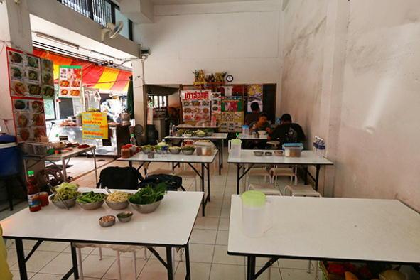
この店でクイッティアオ・ガイを食べる際、好まれているのは太麺のセンヤイ。私はセンヤイをあまり食すことがないのですが、常連客に習って太麺を選んでみました。
頂上にはしっかり煮込まれた鶏肉。丼の中で異彩を放っているのは、ほろほろになった苦瓜です。クイッティアオ・ガイには苦瓜が入っていることが多いのですが、私はこの苦瓜が大好物！ 熱々の苦瓜を頬張り、ほどよい柔らかさまで煮込まれた鶏肉にかぶりつく。それに加わり、センヤイのもちもち感、決して濃くはないですが深みのあるスープ。滋味に満ちています。
『ルアテーク』にはクイッティアオのほか、カオマンガイやカオカームーなどのメニューもあり、私が興味をそそられたのはタイ人客がオーダーしていたカノムジーンです。こちらもいただきましたがおすすめです！
［SHOP DATA］
ルアテーク
TEL：081-686-1846
OPEN：7:00-3:00（無休）
PRICE：クイッティアオ・ガイ50B、カノムジーン40B
［行き方］
BTSプラカノン駅3番出口を降りたらUターンし反対方向へ。直進しスクンビット・ソイ71を北上。ソイ3との角にあります。徒歩５分ほど
【プルンチット駅-Ploen Chit-路線図】
［プルンチット駅］どれを食べても満足できる ウィッタユ通りの古き食堂
ホテルが建ち並ぶWitthayu（ウィッタユ）通りに、主張することなく、派手さもなく佇む食堂『サグワンシー』。知らなければここが食堂だということすら分からないほど目立たない外観ですが、古くからこの場所で営んでおり、周辺で働く人々をはじめ旅行者からも長い支持を得ている老舗食堂です。
店内に配置されたテーブルや内装など、どこを見ても食堂っぽさが色濃い。ハイカラなウィッタユ通りにはそぐわないかもしれませんが、毎度来店するたびに心から落ち着ける私にとって貴重な食堂でもあります。
『サグワンシー』にはあらゆるタイ料理が揃っていますが、おすすめしたいのは日替わりメニュー。営業日の月曜日から土曜日まで、それぞれの曜日で数品のメニューが用意されています。ここで紹介するのは月曜日と水曜日のメニューです。
まず月曜日にいただいたのは、マッサマンカレーと揚げた豚肉のスパイシーサラダ（ヤム ムーヤン グロップ）。マッサマンカレーの主役は鶏肉とジャガイモが担い、それらと共に豆が煮込まれ、タイ南部を代表するメニューを仕上げた一品。酸味が主張するスパイシーサラダは、タイ料理のサラダでは珍しいキャベツが使われ、カリカリに揚げた豚肉を引き立たせます。

水曜日に選んだのはタイカレーの一種、ゲーンキレック。キレックという葉を使ったカレーで、スパイシーさは抑えられ食べやすい。ゲーンキレックだけではなく、他ではなかなか出会えないメニューを揃えているのも嬉しい点です。
各曜日とも3〜5種の日替わりメニュー有り。これだけメニューが豊富なら『サグワンシー』だけで満足できる!?
［SHOP DATA］
サグワンシー
TEL：02-251-9378,02-252-7637
OPEN：10:00-15:00（日曜日休み）
PRICE：マッサマンカレー70B、ヤム ムーヤン グロップ70B、ゲーン キレッ70B
［行き方］
BTSプルンチット駅5番出口からWitthayu通りへ出て南進。『The Okura Prestige Bangkok』の前を通り過ぎた数十メートル先です
【プロンポン駅-Phrom Phong-路線図】
［プロンポン駅］チェンマイ出身のオーナーが10年以上育てた北タイ料理店
BTSプロンポン駅の周辺はショッピングモールが建ち、日本人が多いエリアですが、この通りを歩いた方は少ないのではないでしょうか。
スクンビット・ソイ35。
これといった店もなく、車の往来だけが目立つ通り。
10年以上前、このソイ35に北タイ料理店『GEDHAWA（ゲッタワー）』を構えたのがリーさんです。チェンマイ出身の彼は1986年にバンコクへ移り住み、約20年後『GEDHAWA』をオープンするに至ります。

知る人ぞ知る北タイ料理店となったいま、ソイ35を歩く人のほとんどは、この店を目指しているといって過言ではありません。
数ある北タイ料理メニューから、リーさんが選んでくれた三品はこちら。
北タイ名物カオソーイ・ガイ、ナスのピリ辛サラダのヤムマクア、小エビを発酵させた調味料ガピで8種の野菜をいただくナムプリックオーン。
平麺を使ったカオソーイは薫り高く、食べ進めるとほどよい辛さが広がります。大きな鶏肉も食べ応えがある！
ヤムマクアには挽き肉やエシャロットが添えられ、他店にはない個性を演出。ナムプリックオーンのガピは辛さが抑えられ、深みのある味わいで野菜が進みます。
店名のGEDHAWAは、タイ語でクチナシを意味します。ソイ35に咲いた一輪のクチナシ。いまでは連日多くの方々が来店する大輪となりました。
［SHOP DATA］
GEDHAWA
TEL：02-262-0501
OPEN：11:00-14:00,17:00-22:00（日曜日休み）
PRICE：カオソーイ ガイ100B、ヤムマクア120B、ナムプリックオーン140B
［行き方］
BTSプロンポン駅5番出口を出て真っすぐ。スクンビット・ソイ35を目指します。ソイ35を右折し400メートルほど先の右手です
［プロンポン駅］1944年に創業した老舗食堂は 日本人居住エリアでいぶし銀を光らせる
日本人が好んで住むBTSプロンポン駅周辺でも、特にスクンビット・ソイ39は多く、日本食店も数軒営業しているほど日本人色の濃い通りです。通りを往来する車やバイクは絶えず、いつも日本人を見かけるこの通りに、そっと、静かに営業している『Yong Lee』というタイ食堂。私はこの店の前を何度も通り過ぎていたはずですが、一度も目に留まったことはなく、気付きもしませんでした。
この店を教えてくれたのは「激旨！タイ食堂」の読者です。教えていただいた彼女と共に、初めて『Yong Lee』を訪れました。夕食時間帯に来店したのですが、先客はゼロ。BGMが流れることもなく、ただただ静かに時間が流れています。見るからに古くからの食堂っぽいですが、天井からは小さなミラーボールが垂れ下がっているのはご愛嬌でしょう。
手渡されたメニューを覗くと、変わった一品に気付きました。タンシチューです。BTSナナ駅篇で取り上げた同店名の『Yong Lee』にも、同じくタンシチューがありました。姉妹店なのだろうか...。
私たちが選んだのはタンシチューの他、プラーガポン パックプリック、プーパッポンカレー、豚肉と玉ねぎの和え物、プージャーというカニの甲羅揚げです。LEOビールをお供に全品をいただきましたが、どれも素晴らしい！
これほどの料理を出す食堂なのに、なぜこんなにもお客さんが少ないのか首をかしげるばかり。周辺に住む日本人たちはタイ料理店には目が向かず、日本食店を目指している方がほとんどなのかもしれません。
ひとつ気になっていたのは、ナナ駅近くの同店名『Yong Lee』とは姉妹店関係にあるのか。食後、スタッフの女性に私が気になっていたことを伺いました。
「ぜんぜん関係ないわよ」
［SHOP DATA］
Yong Lee
TEL：02-258-8863,02-258-8313
OPEN：10:00-20:00（日曜日休み）
PRICE：プラーガポン パック プリック80B、プーパッポンカレー140B、タンシチュー100B、プージャー140B
［行き方］
BTSプロンポン駅3番出口を降りてUターンすると、スクンビット・ソイ39が左手に伸びています。この通りを100メートルほど北上した右手です
［プロンポン駅］駅直下のカオマンガイ屋台は 毎夜長蛇の列ができる人気店
BTSプロンポン駅を降りたすぐ、ショッピングモール『The Emporium（エンポリアム）』至近の歩道で屋台を組み、路上にテーブルを並べる、一見どこにでもあるカオマンガイ屋台。ここが他カオマンガイ屋と異なるのは、集客数です。17時にオープンするとじわじわと人々が集まり、18時ごろになると行列が発生。ピークタイムになると設置されたテーブル席は満席になり、座る場所もなくなってしまう超人気店です。
私はかろうじて一席を確保。手に持った皿を置き、カオマンガイを味わいます。付けダレのチムはさほど辛くなくあっさりめ。弾力感が素晴らしい鶏肉と、しっかりとした旨味のあるご飯。立地場所といい味といい、タイ人たちが並んでまで求めるのも首肯できます。
並ぶ客にカオマンガイを提供するため、次々と目まぐるしく鶏肉をさばいているのは男性店主。手を休める暇もなく、繁忙を極めている最中、私は図太くも話しかけてみました。
「創業？ お店を始めてからは14年ほど。家族3人でやっているんだ」
手早い業で鶏肉をさばきながらも、温厚な口調で答えてくれました。忙しいのは毎夜のことなので、体が慣れてしまっているのかもしれません。
日々の営業時間は4時間のみ。鶏肉がなくなると閉店時間前に終わるため、早めの時間帯に来店することをおすすめします。
［SHOP DATA］
ヘンヘンカオマンガイ
TEL：089-888-0282
OPEN：17:00-21:00
PRICE：カオマンガイ35B （大）40B
［行き方］
BTSプロンポン駅4番出口の階段を降りてすぐの場所で営業しています
［プロンポン駅］駅から徒歩5分で行ける 人気＆有名クイッティアオ屋
バンコクでタイ料理を食べ歩いたことがある方なら、このクイッティアオ屋を知っている方は多いでしょう。BTSプロンポン駅から歩いて5分ほどで行ける『ルンルアン』。日本のガイドブックにも載る超有名店で、タイ人の間でも広く知られ、ベンツなどの高級車で来店し店前に停め、クイッティアオを食べて帰る人もいるほどです。
創業して60年以上。『ルンルアン』のクイッティアオは、トムヤム味のスープ有りとスープ無し、ナムサイ（透明なあっさりとしたスープ）のスープ有り無しの合計4種。それらスープの種類や有無のほか、麺の種類であるセンミー（細麺）、センレック（中麺）、センヤイ（太麺）、バミー（中華麺）、春雨麺、そしてキアムイーといううどんのような米麺から選びます。
『ルンルアン』のクイッティアオは変わった味ではないものの、他店にはない独特の風味があり、この味を求め連日たくさんの来客で賑わっています。私もいろんな店でクイッティアオを食べましたが、『ルンルアン』と同じような店にはまだ出会ったことがありません。
麺をゆがくなど調理を任されているのは若いタイ人男性。店主は彼の母親。以前、取材した際はそれぞれの写真は撮影させてもらいましたが、今回は初となるツーショットをおさめました！
［SHOP DATA］
ルンルアン
TEL：02-258-6746
OPEN：8:30-17:00（無休）
PRICE：クイッティアオ50B〜
［行き方］
BTSプロンポン駅4番出口。階段を降りたらUターンし、スクンビット・ソイ26へ。通りの入り口から150メートルほど先の右手に立地しています
【プンナウィティ駅-Punnawithi-路線図】
［プンナウィティ駅］自家製ルークチンは豚と牛の2種 創業40年を超える老舗が駅近に

BTSプンナウィティ駅の周辺はショッピングモールや目立った施設はなく、日本人の姿を見かけることはほとんどありません。利用頻度の少ないこの駅近に、創業40年以上が経つルークチンの店があることはあまり知られていないでしょう。
駅から徒歩３分ほどの立地にある『ルークチンアナマイ』。豚と牛、2種の自家製ルークチンをメインに、クイッティアオも置く麺食堂です。
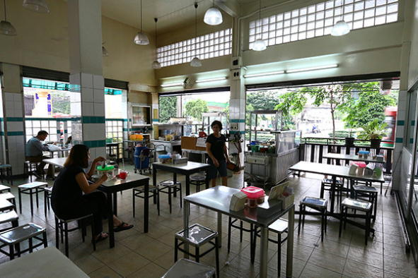
「ここで営業してから40年で、以前は別の場所で営んでいたそうです。私の父が3代目になります」
お話しを聞かせてくれたのは3代目店主の娘さん。彼女は店内を案内してくれ、過去に取材を受けた記事などを見せてくれました。
創業して40年以上が経っていますが、きっとリノベーションしたのでしょう。店内はキレイで、奥には仕切られたエアコンルームも設けられています。
私がいただいたのは、炙った豚ルークチンと、牛ルークチン入りのクイッティアオ。
クイッティアオの麺は細麺のセンミーと太麺のセンヤイの2種で楽しめ、私のおすすめは細麺です。
続いては炙りルークチン。香ばしい薫りが立ち、頬張ると口の中にその薫りがほのかに広がる。独特の味付けなどを加えることなく、王道のルークチンを数十年に渡って地道に作り続けたからこその、味と風味。毎日食べても飽きないだろうなぁ。
炭火で炙ったルークチンは、焦げたところをハサミでカットして提供するという細やかさ。きっちりと手をかけた炙りルークチン。こちらも必食です。
［SHOP DATA］
ルークチンアナマイ
TEL：02-2311-2308
OPEN：9:00-17:30（月1日休み）
PRICE：クイッティアオ50B、ルークチン45B
［行き方］
BTSプンナウィティ駅の２番出口が最寄りです。階段を降りて200メートルほど真っすぐ進むと看板が見えてきます
【ラーチャテウィー駅-Ratchathewi-路線図】

［ラーチャテウィー駅］連日満席のイサーン食堂 ハーブ薫るガイヤーンは必食！
店内にも席を設けていますが、それだけでは足りず、毎夜歩道にも大量のテーブルを並べて営業している『コンムアン ロップクルア ムアンリン』。
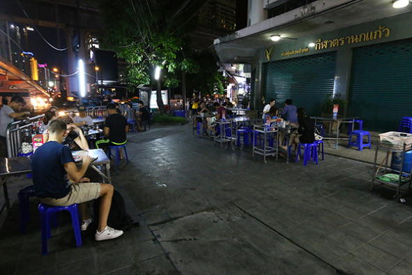
イサーン料理が中心のお店ですが、新鮮な魚介類も揃え、タイシーフード料理も評判の食堂です。ローカルのタイ人客が多いのはもちろん、白人旅行者にも名が知れているようで、欧米人の姿もちらほら見受けられます。
おすすめ料理がたくさんある同店ですが、ぜひ食べてもらいたいのはガイヤーン。メニュー1ページを使い紹介しているほど推しの一品です。
小サイズ100バーツ、大サイズ180バーツ。私は１人で来店したのと、もう一品の海鮮チムチュムをオーダーしたため、もちろん小サイズでした。ところが出て来たのはとても小サイズとは思えない、バケットに入ったガイヤーン！
ガイヤーンはサイズが大きいだけではありませんでした。
鶏肉を一口頬張ると口の中に広がるのはハーブの薫り。表面のロースト具合も絶妙で、スマッシュヒットです。これだけでも１人なら十分ですが、チムチュムの具材も多いこと！ 野菜の盛り具合といい、貝や白身魚、イカと具材の種類も多く、220バーツならコスパの高いチムチュムです。
他の料理たちもきっと私の舌を唸らせてくれるはず。「通いたいタイ料理店」のリスト入り決定！
［SHOP DATA］
コンムアン ロップクルア ムアンリン
TEL：084-117-4852,085-170-5414
OPEN：17:00-1:00（無休）
PRICE：チムチュムタレー220B、ガイヤーン（小）100B、（大）180B
［行き方］
BTSラーチャテウィー駅3番出口の階段を降りて、数メートル先の交差点を左に曲がったすぐの場所です
おわりに
最後までお読みいただきありがとうございます。
この電子書籍の取材を進めている最中、私がタイ料理にハマり、食べ歩きを始めたころを思い出しました。当時は（3年ほど前ですが）、バンコクのタイ料理店情報に特化したWebサイトはなく、インターネット上に散らばっているブログなどの情報をかき集め、１人でどこへでも飛んで行きました。もしあのとき、本書や「激旨！タイ食堂」のようなサイトがあったら、時間をかなり節約できたに違いない。いまならそう思えます。
私のように時間をかけてお店を探していた手間が省け、本書によってみなさまの時間が節約できバンコクでの食べ歩きに少しでもお役に立てたことを願うばかりです。
本企画を進めるにあたり助力してくださった、バンコクのWebマーケティング会社「Yindeed」代表の明石直哉氏には、この場で深く御礼申し上げます。
これからも不定期で電子版の書籍を上梓していこうと考えています。次回企画しているのはMRT（地下鉄）篇です。発売日が決まりましたらサイトやFacebook、Twitterなどで告知して参りますので、ご興味がある方はぜひフォローしてください。
また「激旨！タイ食堂」では、バンコク出発のグルメツアーを定期的に催行しています。タイ初心者はもちろん、ありふれた旅行ツアーに飽きた方にも楽しんでいただけると思います。私も毎回同行していますので、ぜひツアーでお会いしましょう！
激旨！タイ食堂URL：http://タイ料理-バンコク.com
Facebook：https://www.facebook.com/gekiuma.bkk/
Twitter：https://twitter.com/gekiuma_bkk
2016年12月 激旨！タイ食堂運営者 西尾康晴
＜筆者プロフィール＞
西尾 康晴（にしおやすはる）
1974年大阪府大阪市生まれ。
大阪で4年間、東京で3年間、雑誌編集の仕事に携わる。
2011年、バンコク発の月刊誌G-DIARYの編集者として採用され渡タイ。
編集業の傍ら、2015年に「激旨！タイ食堂」を立ち上げる。
ほか「激旨！アジア食堂」も運営。